Math for Data Science#
Welcome to the Math for Data Science blog. This resource is a curated reference and learning guide on the core mathematical foundations of Data Science, Machine Learning, and Deep Learning, authored by Huỳnh Trung Nghĩa.
Calculus & Linear Algebra: Functions, matrices, eigenvalues, gradients, and integration.
Probability & Statistics: Distributions, conditional probability, Bayes’ theorem, and descriptive/inferential statistics.
Optimization: Convexity, duality, optimization algorithms (like gradient descent), and combinatorial optimization.
Rather than dry mathematical proofs, we focus on conceptual intuition coupled with step-by-step Python implementations using libraries like numpy, scipy, matplotlib, and scikit-learn.
📚 Reference Textbooks#
Our content and structure draw inspiration from these highly recommended books:
Essential Math for Data Science Thomas Nield (O’Reilly, 2022)
1001 Math Problems LearningExpress (2nd Edition)
🗺️ Blog Map & Chapters#
The content is organized into 9 key modules, guiding you from basic arithmetic to advanced machine learning foundations:
📖 Part 1: Basic Math & Calculus#
Fundamentals: Number systems, fractions, decimals, order of operations, and algebraic variables.
Functions & Graphs: Linear and curvilinear functions, summations, exponents, and logarithms (featuring Euler’s number and the Rule of 72).
Advanced Core: Introductions to Linear Algebra, Calculus (derivatives, gradients), and Integration.
🎲 Part 2: Probability & Statistics#
Probability: Core rules, joint and union probability, conditional probability, Bayes’ Theorem, and probability distributions (Binomial, Beta).
Statistics: Mean, median, mode, variance, standard deviation, and key statistical concepts.
⚡ Part 3: Optimization#
Convexity: Convex sets, convex functions, and convex optimization problems.
Theory & Algorithms: Duality (Lagrangian, KKT conditions), gradient descent algorithms, and combinatorial optimization.
🌀 Part 4: Functional Analysis & Measure Theory#
Functional Analysis: Banach spaces, bounded linear operators, quotient spaces, Baire Category Theorem, and Hahn-Banach Theorem.
Measure Theory: Outer measure, \(\sigma\)-algebras, Lebesgue measure, measurable functions, and simple functions.
🌐 Part 5: Topology#
General Topology: Metric spaces, open sets, neighborhoods, compactness, and connectedness.
Manifolds: The Manifold Hypothesis, homeomorphisms (and their role in neural networks), and topological dimensionality reduction (t-SNE, UMAP).
Topological Data Analysis (TDA): Simplicial complexes, Betti numbers, and Persistent Homology (barcodes and diagrams).
📈 Part 6: Approximation Theory#
Fitting: Curve fitting, regression analysis, interpolation, and approximating continuous functions.
🤖 Part 7: Machine Learning#
Math Foundations: Practical methodology, supervised learning math, unsupervised learning math, and distributed learning structures.
🧠 Part 8: Deep Learning#
Neural Networks: Artificial neurons, activation functions, loss functions, backpropagation, and gradient descent optimization in deep networks.
📚 Part 9: Recommended Reading#
Reading: Our curated list of recommended textbook resources for mathematics and AI.
📖 Table of Contents#
Introduction#
Welcome to the Basic Math and Calculus Review section. This module covers the essential mathematical foundations required for data science, machine learning, and statistical analysis, structured after the textbook Essential Math for Data Science.
📂 Topics Covered#
In this section, you will explore:
Number Theory: Understanding number systems (Natural, Whole, Integers, Rational, Irrational, Real, and Complex numbers) which form the foundation of computing and data representation.
Fractions: Proportions, ratios, and fractional calculations.
Decimals & Percentages: Decimals, percentage change, and performance metric conversions.
Order of Operations: Following the PEMDAS rules in mathematical calculations.
Variables: Using variable placeholders, solving linear and quadratic equations.
Functions: Domain mapping, linear equations, slope, and intercept.
Curvilinear Functions: Working with non-linear curves, parabolas, exponentials, logs, and limits.
Summations: Iterative addition and using Sigma (\(\sum\)) notation in statistics and cost functions.
Exponents: Understanding powers, square roots, and Euler’s constant.
Logarithms: Properties of logs, natural log, and log-transformations.
Linear Algebra Basics: Working with vectors, matrices, operations, and determinants.
Calculus & Derivatives: Exploring derivatives, partial derivatives, chain rule, and gradients.
Integration: Learning about integrals, Riemann sums approximation, symbolic/numerical integration, and probability density functions.
🚀 Get Started#
Select Number from the sidebar to begin your mathematical journey!
Number#

Natural Numbers#
The natural numbers are the numbers 1, 2, 3, etc., possibly including 0 as well.
The natural numbers start with 0, corresponding to the non-negative integers 0, 1, 2, 3, …, whereas others start with 1, corresponding to the positive integers 1, 2, 3, …
The natural numbers can be used for counting (as in “there are six coins on the table”), in which case they serve as cardinal numbers. They may also be used for ordering (as in “this is the third largest city in the country”), in which case they serve as ordinal numbers. Natural numbers are sometimes used as labels, known as nominal numbers, having none of the properties of numbers in a mathematical sense (e.g. sports jersey numbers).[3][6]
Set of Natural Numbers: N = {1, 2, 3, 4, 5, 6, 7, 8, 9,…}

Whole Numbers#
Whole numbers are a set of numbers including all natural numbers and 0
Set of Whole Numbers: W = {0, 1, 2, 3, 4, 5, 6, 7, 8, 9, 10……}

Integers#
Integers include positive and negative whole numbers as well as 0. In In the language of mathematics, the set of integers is often denoted by the boldface Z
Set of Integers: Z = {….-9, -8, -7, -6, -5, -4, -3, -2, -1, 0, 1, 2, 3, 4, 5, 6, 7, 8, 9,…}

Rational Numbers#
a rational number is a number that can be expressed as the quotient or fraction 
For example, 


Irrational Numbers#
Irrational numbers cannot be expressed as a fraction (That is, irrational numbers cannot be expressed as the ratio of two integers. When the ratio of lengths of two line segments is an irrational number, the line segments are also described as being incommensurable, meaning that they share no “measure” in common, that is, there is no length (“the measure”), no matter how short, that could be used to express the lengths of both of the two given segments as integer multiples of itself.
Among irrational numbers are the ratio π of a circle’s circumference to its diameter, Euler’s number e, the golden ratio φ, and the square root of two.[1] In fact, all square roots of natural numbers, other than of perfect squares, are irrational.[2]). This includes the famous Pi , square roots of certain numbers like , and Euler’s number which we will learn about later. These numbers have an infinite number of decimal digits, such as :

The common examples of irrational numbers are pi(π=3⋅14159265…), √2, √3, √5, Euler’s number (e = 2⋅718281…..), 2.010010001….,etc.

Real Numbers#
Real numbers include rational as well as irrational numbers. In practicality, when you are doing any data science work you can treat any decimals you work with as real numbers.

Complex and Imaginary Numbers#
The numbers which are not real are imaginary numbers. When we square an imaginary number, it gives a negative result. It is represented as Im().
Example: √-2, √-7, √-11 are all imaginary numbers
The complex numbers were introduced to solve the equation x2+1 = 0. The roots of the equation are of form x = ±√-1 and no real roots exist. Thus, with the introduction of complex numbers, we have Imaginary roots.
We denote √-1 with the symbol I, which denotes Iota (Imaginary number).
The complex number is basically the combination of a real number and an imaginary number. The complex number is in the form of a+ib, where a = real number and ib = imaginary number. Also, a,b belongs to real numbers and i = √-1.
Hence, a complex number is a simple representation of addition of two numbers, i.e., real number and an imaginary number. One part of it is purely real and the other part is purely imaginary.

Order of Operations (PEMDAS)#
When evaluating mathematical expressions, we must follow a strict order of operations to avoid ambiguity. The standard convention is PEMDAS:
Parentheses
()Exponents (Powers and Roots)
Multiplication and Division (from left to right)
Addition and Subtraction (from left to right)
Python Implementation#
Python automatically follows PEMDAS when evaluating expressions:
# 3 + 5 * 2^3 - (4 / 2)
# 1. Parentheses: (4 / 2) -> 2
# 2. Exponents: 2^3 -> 8
# 3. Multiplication: 5 * 8 -> 40
# 4. Addition/Subtraction: 3 + 40 - 2 -> 41
result = 3 + 5 * 2**3 - (4 / 2)
print("Result of expression:", result)
Exercises#
Exercise 1
Evaluate the expression using PEMDAS rules: $\(12 - 3 \times (2 + 1)^2 \div 9 + 4\)$ Verify your answer with Python.
Solution — Exercise 1
According to PEMDAS:
Parentheses: \((2 + 1) = 3\)
Exponents: \(3^2 = 9\)
Multiplication/Division (left to right):
\(3 \times 9 = 27\)
\(27 \div 9 = 3\)
Addition/Subtraction (left to right):
\(12 - 3 = 9\)
\(9 + 4 = 13\)
Verification in Python:
ans = 12 - 3 * (2 + 1)**2 / 9 + 4
print("Answer:", ans) # Output: 13.0
Fractions#
Fractions represent a part of a whole. In data science, fractions are the foundation of probabilities, proportions, and ratios (such as precision and recall).
1. What Is a Fraction?#
A fraction is written as:
Where:
\(a\) is the numerator (how many parts we have).
\(b\) is the denominator (how many equal parts the whole is divided into).
2. Basic Operations#
Addition & Subtraction#
To add or subtract fractions, they must have a common denominator:
Multiplication#
Multiply numerators together and denominators together:
Division#
To divide by a fraction, multiply by its reciprocal:
3. Python Fraction Module#
Python has a built-in module fractions to handle exact fraction arithmetic:
from fractions import Fraction
# Create fractions
f1 = Fraction(1, 3)
f2 = Fraction(1, 2)
# Arithmetic operations
print("1/3 + 1/2 =", f1 + f2)
print("2/3 * 3/4 =", Fraction(2, 3) * Fraction(3, 4))
Exercises#
Exercise 1
Calculate: $\(\frac{3}{4} \div \frac{2}{3} - \frac{1}{2}\)$
Solution — Exercise 1
Perform division first:
\[\frac{3}{4} \times \frac{3}{2} = \frac{9}{8}\]Perform subtraction:
\[\frac{9}{8} - \frac{1}{2} = \frac{9}{8} - \frac{4}{8} = \frac{5}{8}\]
Decimals & Percentages#
Decimals and percentages are alternative ways of expressing fractions and proportions. In Data Science, we constantly work with probability values as decimals (e.g., \(0.85\)) and interpret evaluation metrics as percentages (e.g., \(85\%\)).
1. Decimals#
A decimal is a fraction whose denominator is a power of ten (10, 100, 1000, etc.), written using a decimal point.
For example: $\(\frac{7}{10} = 0.7\)\( \)\(\frac{125}{1000} = 0.125\)$
Repeating Decimals#
Some fractions produce infinitely repeating decimals: $\(\frac{1}{3} = 0.3333\dots\)$
2. Percentages#
The word percent means “per hundred”. To convert a decimal to a percentage, multiply by 100 and add the \(\%\) sign.
Percentage Change#
In data analysis, we often compute the percentage change between two values (e.g. increase in website traffic):
3. Python Implementations#
# Calculating percentage change
old_revenue = 150
new_revenue = 180
pct_change = ((new_revenue - old_revenue) / old_revenue) * 100
print(f"Revenue growth: {pct_change:.1f}%")
Exercises#
Exercise 1
A model correctly classified 45 out of 60 test images. What is the classification accuracy in percentage?
Solution — Exercise 1
Compute the proportion: $\(\text{Accuracy} = \frac{45}{60} = 0.75\)\( Convert to percentage: \)\(0.75 \times 100\% = 75\%\)$
Order of Operations#
In mathematics and computer science, we evaluate expressions based on a strict order of operations to avoid ambiguity. The standard convention is PEMDAS (or BODMAS in some regions).
1. The PEMDAS Rule#
When solving mathematical expressions, perform calculations in the following order:
Parentheses
()Exponents (Powers, Roots)
Multiplication and Division (evaluated from left to right)
Addition and Subtraction (evaluated from left to right)
2. Python Implementation#
Python automatically follows PEMDAS rules when calculating expressions:
# Expression: 3 + 5 * 2^3 - (4 / 2)
# Step-by-step:
# 1. Parentheses: (4 / 2) -> 2.0
# 2. Exponents: 2**3 -> 8
# 3. Multiplication: 5 * 8 -> 40
# 4. Add/Subtract: 3 + 40 - 2.0 -> 41.0
result = 3 + 5 * 2**3 - (4 / 2)
print("Computed result:", result)
Exercises#
Exercise 1
Evaluate the expression manually: $\(10 - 2 \times (3 + 1)^2 \div 8 + 5\)$ Verify your answer with Python.
Solution — Exercise 1
Using PEMDAS:
Parentheses: \((3 + 1) = 4\)
Exponents: \(4^2 = 16\)
Multiplication/Division (left to right):
\(2 \times 16 = 32\)
\(32 \div 8 = 4\)
Addition/Subtraction (left to right):
\(10 - 4 = 6\)
\(6 + 5 = 11\)
Variables#
In mathematics and programming, a variable is a named placeholder or symbol (such as \(x\), \(y\), or \(w\)) used to represent a value that can change or is currently unknown. In Machine Learning, variables represent our data features and model parameters.
1. Linear Equations#
A linear equation is an equation of a straight line, typically written as:
To solve for \(x\):
Multi-variable Linear Equations#
In Machine Learning, we often map relationships as linear combinations:
This represents a plane in 3D space, which is the foundation of Multiple Linear Regression.
2. Quadratic Equations#
A quadratic equation is in the form:
The solutions (roots) can be found using the quadratic formula:
3. Symbolic Algebra in Python with SymPy#
We can solve algebraic equations exactly using SymPy:
import sympy as sp
x = sp.symbols('x')
# Solve: 2x - 6 = 0
eq1 = sp.Eq(2*x - 6, 0)
sol1 = sp.solve(eq1, x)
print("Solution for 2x - 6 = 0:", sol1)
# Solve quadratic: x^2 - 5x + 6 = 0
eq2 = sp.Eq(x**2 - 5*x + 6, 0)
sol2 = sp.solve(eq2, x)
print("Solutions for x^2 - 5x + 6 = 0:", sol2)
Exercises#
Exercise 1
Solve the quadratic equation: $\(x^2 - 4x - 5 = 0\)$
Solution — Exercise 1
Using coefficients \(a=1, b=-4, c=-5\): $\(x = \frac{-(-4) \pm \sqrt{(-4)^2 - 4(1)(-5)}}{2(1)}\)\( \)\(x = \frac{4 \pm \sqrt{16 + 20}}{2} = \frac{4 \pm \sqrt{36}}{2}\)\( \)\(x_1 = \frac{4 + 6}{2} = 5, \quad x_2 = \frac{4 - 6}{2} = -1\)$
Functions#
A function is a mathematical rule that takes an input (usually denoted as \(x\)) and maps it to a unique output (usually denoted as \(y\) or \(f(x)\)). In Data Science, we use functions to represent relationships between features (inputs) and targets (outputs).
1. What Is a Function?#
Formally, a function \(f\) maps elements from a domain \(X\) to a codomain \(Y\):
For every input \(x \in X\), there is exactly one output \(y \in Y\) such that \(y = f(x)\).
2. Linear Functions#
A linear function is a function that creates a straight line when graphed. Its general algebraic form is:
Where:
\(m\) is the slope (rate of change, or gradient). It determines the steepness of the line:
\[m = \frac{y_2 - y_1}{x_2 - x_1}\]\(c\) is the y-intercept (where the line crosses the y-axis, i.e., \(f(0)\)).
In Machine Learning, this equation forms the basis of Simple Linear Regression, where \(m\) is the weight (\(w\)) and \(c\) is the bias (\(b\)): $\(y = wx + b\)$
3. Plotting Linear Functions in Python#
We can use matplotlib to plot linear functions and visualize their slopes and intercepts:
import numpy as np
import matplotlib.pyplot as plt
# Generate x values
x = np.linspace(-10, 10, 100)
# Define two linear functions
y1 = 2 * x + 3 # slope = 2, intercept = 3
y2 = -0.5 * x - 1 # slope = -0.5, intercept = -1
# Plot
plt.figure(figsize=(8, 5))
plt.plot(x, y1, label="y = 2x + 3", color="blue")
plt.plot(x, y2, label="y = -0.5x - 1", color="red")
plt.axhline(0, color='black',linewidth=0.5)
plt.axvline(0, color='black',linewidth=0.5)
plt.grid(color='gray', linestyle='--', linewidth=0.5)
plt.legend()
plt.title("Linear Functions")
plt.savefig('../../images/linear_functions.png', dpi=150)
plt.show()
Exercises#
Exercise 1
A line passes through the points \((1, 3)\) and \((3, 7)\).
Find the slope of the line.
Determine the equation of the line.
Solution — Exercise 1
Slope (\(m\)):
\[m = \frac{7 - 3}{3 - 1} = \frac{4}{2} = 2\]Using the point-slope form \(y - y_1 = m(x - x_1)\) with point \((1, 3)\):
\[y - 3 = 2(x - 1) \implies y = 2x + 1\]
Curvilinear Functions#
A curvilinear function is a non-linear function whose graph forms a curve rather than a straight line. In Data Science, curvilinear functions model complex patterns, growth rates, activation thresholds (like Sigmoid), and loss curves.
1. Types of Curvilinear Functions#
Quadratic Functions (Parabolas)#
A quadratic function is a second-degree polynomial in the form:
Its graph is a parabola. If \(a > 0\), the parabola opens upwards (having a minimum). If \(a < 0\), it opens downwards (having a maximum). This shape is central to squared loss functions (\(MSE = \frac{1}{n} \sum (y_i - \hat{y}_i)^2\)).
Exponential Functions#
Exponential functions represent rapid growth or decay, in the form:
Where \(e \approx 2.71828\). This is used to model population growth, compounding interest, or decay rates in learning algorithms.
Logarithmic Functions#
The logarithmic function is the inverse of the exponential function:
It grows very rapidly at first but levels off. In machine learning, log functions are used in log-transforms to scale heavily skewed features.
2. Limits and Curvature#
Because the slope of a curvilinear function is constantly changing at every point, we cannot define a single slope.
Secant Line: The average rate of change between two points \((x_1, y_1)\) and \((x_2, y_2)\).
Tangent Line: The instantaneous rate of change at a single point, which we find using limits and calculus.
3. Plotting Curvilinear Functions in Python#
Let’s visualize a quadratic curve and the standard Logistic Sigmoid function (\(S(x) = \frac{1}{1 + e^{-x}}\)) commonly used in Logistic Regression:
import numpy as np
import matplotlib.pyplot as plt
x = np.linspace(-6, 6, 200)
# Quadratic function
y_quad = x**2
# Sigmoid function
y_sigmoid = 1 / (1 + np.exp(-x))
# Plotting
fig, (ax1, ax2) = plt.subplots(1, 2, figsize=(12, 5))
# Parabola
ax1.plot(x, y_quad, color='blue', label=r'$y = x^2$')
ax1.set_title("Quadratic Function")
ax1.grid(True)
ax1.legend()
# Sigmoid
ax2.plot(x, y_sigmoid, color='green', label=r'$S(x) = \frac{1}{1 + e^{-x}}$')
ax2.set_title("Sigmoid Activation Function")
ax2.grid(True)
ax2.legend()
plt.savefig('../../images/curvilinear_functions.png', dpi=150)
plt.show()
Exercises#
Exercise 1
Find the vertex (minimum point) of the quadratic function:
Hint: The x-coordinate of the vertex of \(ax^2 + bx + c\) is given by \(x = -b / 2a\).
Solution — Exercise 1
Using the formula \(x = -b / 2a\):
Compute \(f(3)\):
The vertex (minimum) is at \((3, 0)\).
Summations#
A summation is the operation of adding a sequence of numbers. In mathematics and data science, we represent this using the Greek capital letter Sigma (\(\sum\)).
1. What Is a Summation?#
A summation is written in the following format:
Where:
\(i\) is the index of summation (start variable).
\(1\) is the lower limit (starting point).
\(n\) is the upper limit (ending point).
\(x_i\) represents the term to be added at index \(i\).
This expands to: $\(\sum_{i=1}^{n} x_i = x_1 + x_2 + x_3 + \dots + x_n\)$
Example:#
2. Summations in Data Science#
We use summations to define key algorithms and performance metrics.
Mean:#
Mean Squared Error (MSE Loss):#
3. Python Implementation#
You can compute summations in Python using loops or NumPy’s sum() function:
import numpy as np
# Data points
x = [2, 4, 6, 8]
# 1. Summation using built-in sum()
total = sum(x)
print("Sum of elements:", total)
# 2. Summation using NumPy
np_total = np.sum(x)
print("NumPy sum:", np_total)
Exercises#
Exercise 1
Evaluate the summation: $\(\sum_{i=2}^{5} (2i - 1)\)$
Solution — Exercise 1
Expand the expression for \(i = 2, 3, 4, 5\):
For \(i=2\): \(2(2) - 1 = 3\)
For \(i=3\): \(2(3) - 1 = 5\)
For \(i=4\): \(2(4) - 1 = 7\)
For \(i=5\): \(2(5) - 1 = 9\)
Sum the values: $\(3 + 5 + 7 + 9 = 24\)$
Exponents#
An exponent (or power) represents repeated multiplication of a number by itself. In Data Science, exponential functions model growth rates, decay rates, and activation functions.
1. What Is an Exponent?#
An exponent is written as:
Where:
\(x\) is the base.
\(n\) is the exponent (or power).
This represents \(x\) multiplied by itself \(n\) times: $\(3^4 = 3 \times 3 \times 3 \times 3 = 81\)$
Rules of Exponents#
Exponents follow specific algebraic properties:
Product Rule: \(x^a \cdot x^b = x^{a+b}\)
Quotient Rule: \(\frac{x^a}{x^b} = x^{a-b}\)
Power of a Power Rule: \((x^a)^b = x^{a \cdot b}\)
Negative Exponent Rule: \(x^{-n} = \frac{1}{x^n}\)
Fractional Exponents (Roots): \(x^{\frac{1}{n}} = \sqrt[n]{x}\)
2. Euler’s Number (\(e\))#
Of special importance in calculus and data science is Euler’s number \(e \approx 2.71828\). It is an irrational number that represents the base of natural growth:
3. Python Implementation#
import math
# Exponential calculations: 3^4
print("3^4 =", 3**4)
# Euler's number calculation: e^2
print("e^2 =", math.exp(2))
Exercises#
Exercise 1
Simplify the expression: $\(\frac{x^5 \cdot x^2}{x^3}\)$
Solution — Exercise 1
Apply the rules of exponents:
Product Rule: \(x^5 \cdot x^2 = x^{5+2} = x^7\)
Quotient Rule: \(\frac{x^7}{x^3} = x^{7-3} = x^4\)
Logarithms#
A logarithm is the mathematical operation that is the inverse of exponentiation. Logarithms are widely used in Data Science to scale skewed data (log-transform) and calculate errors in classification loss functions.
1. What Is a Logarithm?#
The logarithm answers the question: To what power must we raise the base to get a certain number?
If:
Then:
For example:
Intuition: The “Zero-Counting” Operation#
To understand logarithms intuitively, think of the base-10 logarithm (\(\log_{10}\)) as a tool that counts the number of zeros in a number (when written as a power of 10):
\(10\) has 1 zero \(\implies \log_{10}(10) = 1\)
\(100\) has 2 zeros \(\implies \log_{10}(100) = 2\)
\(1,000\) has 3 zeros \(\implies \log_{10}(1,000) = 3\)
\(1,000,000\) (1 million) has 6 zeros \(\implies \log_{10}(1,000,000) = 6\)
Thus, the logarithm tells us the “scale” or “order of magnitude” of a number. If a number falls between \(100\) and \(1,000\) (e.g., \(500\)), its logarithm will be a decimal between \(2\) and \(3\) (\(\log_{10}(500) \approx 2.699\)).
Why Do We Use Logarithms?#
Logarithms are essential tools in both scientific measurements and modern data science for several key reasons:
A. Simplifying Arithmetic: Multiplication to Addition (Historical)#
Before calculators existed, multiplying extremely large numbers (like astronomical distances) was highly tedious and error-prone. Logarithms solve this through the product rule:
Astronomers and mathematicians only needed to look up the log values of their numbers in physical “log tables,” add them together, and then perform an inverse lookup (anti-logarithm) to find the final product. Adding two numbers is far simpler than multiplying them.
B. Compressing Scales for Real-World Measurements#
In nature, many physical phenomena have ranges of intensity so vast that linear scales are completely impractical. We use logarithmic scales to compress these into human-readable ranges:
Earthquakes (Richter Scale): The Richter scale is logarithmic. An earthquake of magnitude 6 is not just “one unit” stronger than a magnitude 5; its seismic wave amplitude is actually \(10\) times larger. A magnitude 8 earthquake is \(1,000\) times stronger than a magnitude 5.
Acidity (pH Scale): The pH scale measures the concentration of hydrogen ions \([H^+]\). A pH of 3 is \(10\) times more acidic than a pH of 4, and \(100\) times more acidic than a pH of 5.
Sound Intensity (Decibel Scale): Human hearing can detect sound intensities spanning over 12 orders of magnitude. The decibel (dB) scale uses logarithms to map this massive range to a manageable scale from 0 dB (threshold of hearing) to 120 dB (pain threshold).
C. Handling Skewed Data (Modern Data Science)#
In data science, we frequently encounter features with highly skewed distributions where a few data points are orders of magnitude larger than the rest. Examples include individual income, video view counts on YouTube, or word frequencies in a text corpus.
If we train a Machine Learning model on this raw, skewed data, the model might overfit to the extreme values (outliers) or fail to capture patterns in the smaller values. By applying a Log-transform, we compress the scale:
For $100,000: \(100,000 = 10^5 \implies \log_{10}(100,000) = 5\)
For $1,000,000,000: \(1,000,000,000 = 10^9 \implies \log_{10}(1,000,000,000) = 9\)
Instead of handling the massive gap between $100,000 and $1,000,000,000, the machine learning algorithm works with a balanced range from \(5\) to \(9\). This scale compression helps optimization algorithms (like gradient descent) converge much faster and makes models robust to outliers.
2. Euler’s Number (\(e\)) and the Natural Logarithm (\(\ln\))#
What is Euler’s Number (\(e\))?#
Euler’s number, denoted as \(e\), is a mathematical constant approximately equal to \(2.71828\). It is the base of natural growth and decay.
The value of \(e\) is defined as the limit of the compound interest formula as the number of compounding periods approaches infinity:
The Natural Logarithm (\(\ln(x)\)) is simply a logarithm with base \(e\):
Because \(e\) and \(\ln\) are inverse functions, they cancel each other out:
Real-World Application: Continuous Compound Interest#
In finance, if an investment of principal \(P\) grows at an annual interest rate \(r\) compounded \(n\) times a year for \(t\) years, the final amount \(A\) is:
If the interest is compounded continuously (meaning \(n \to \infty\), compounding every microsecond), the formula simplifies using Euler’s number \(e\) (often called the PERT formula):
Deriving the “Rule of 72” in Investing#
The Rule of 72 is a quick shortcut used to estimate how many years (\(t\)) it takes to double your money at a given annual interest rate (\(r\) expressed as a percentage, e.g., \(r\%\)).
We can mathematically derive this rule using the natural logarithm:
To double our money (\(A = 2P\)), we substitute this into the continuous compound interest formula:
\[2P = P e^{rt} \implies 2 = e^{rt}\]Take the natural logarithm (\(\ln\)) of both sides to get rid of \(e\):
\[\ln(2) = \ln(e^{rt})\]\[\ln(2) = rt\]Since \(\ln(2) \approx 0.693\), we get:
\[rt \approx 0.693 \implies t \approx \frac{0.693}{r}\]If we express the interest rate \(r\) as a percentage (e.g., \(R = r \times 100\), so \(R = 8\) for \(8\%\)), the formula becomes:
\[t \approx \frac{69.3}{R}\]While \(69.3\) is the exact mathematical numerator for continuous compounding, \(72\) is used in finance because it is highly divisible by many common interest rates (such as 2, 3, 4, 6, 8, 9, 12), making mental math extremely easy. For example, at an \(8\%\) interest rate, money will double in approximately \(72 / 8 = 9\) years (the exact value is about \(8.66\) years).
3. Common Properties of Logarithms#
Logarithms possess unique mathematical properties that simplify complex operations:
Product Rule: \(\log_b(x \cdot y) = \log_b(x) + \log_b(y)\)
Quotient Rule: \(\log_b(\frac{x}{y}) = \log_b(x) - \log_b(y)\)
Power Rule: \(\log_b(x^k) = k \cdot \log_b(x)\)
Two Crucial Bases:#
Natural Logarithm (\(\ln(x)\)): Logarithm with base \(e \approx 2.71828\).
Common Logarithm (\(\log_{10}(x)\)): Logarithm with base 10.
4. Python Implementation#
We can compute logarithms in Python using the math and numpy libraries:
import math
import numpy as np
# Natural logarithm: ln(10)
print("ln(10) =", math.log(10)) # math.log defaults to base e
# Base 10 logarithm
print("log10(100) =", math.log10(100))
# NumPy log-transform on an array
data = np.array([1, 10, 100, 1000])
log_data = np.log10(data)
print("Log-transformed data:", log_data)
Exercises#
Exercise 1
Solve for \(x\):
Exercise 2
Expand the expression using logarithm properties:
Solution — Exercise 1
Convert to exponential form:
Solution — Exercise 2
Apply the quotient and power rules:
Linear Algebra Basics#
Linear Algebra is the mathematical language of Machine Learning. It allows us to represent and perform calculations on large datasets efficiently using vectors and matrices.
1. Vectors#
A vector is an ordered list of numbers. In Data Science, we represent a data point (or feature vector) as a vector.
For example, a vector \(x \in \mathbb{R}^3\) is written as:
2. Matrices#
A matrix is a 2D grid of numbers. We write an \(m \times n\) matrix \(A\) (having \(m\) rows and \(n\) columns) as:
Matrix Transpose#
The transpose of a matrix \(A\) (written as \(A^T\)) is obtained by swapping its rows and columns:
3. Core Matrix Operations#
Matrix Multiplication#
If \(A\) is an \(m \times p\) matrix and \(B\) is a \(p \times n\) matrix, their product \(C = AB\) is an \(m \times n\) matrix where each element is:
Identity Matrix#
The identity matrix \(I\) is a square matrix with ones on the main diagonal and zeros elsewhere:
For any matrix \(A\), \(AI = IA = A\).
Determinant#
For a \(2 \times 2\) matrix \(A = \begin{bmatrix} a & b \\ c & d \end{bmatrix}\), the determinant is:
If \(\det(A) \neq 0\), the matrix has an inverse \(A^{-1}\) such that \(A A^{-1} = I\).
4. Python Implementation (NumPy)#
import numpy as np
# Define matrices
A = np.array([[1, 2], [3, 4]])
B = np.array([[5, 6], [7, 8]])
# 1. Matrix Multiplication
C = np.dot(A, B) # or A @ B
print("A @ B =\n", C)
# 2. Transpose
print("\nTranspose of A =\n", A.T)
# 3. Determinant
det_A = np.linalg.det(A)
print(f"\nDeterminant of A: {det_A:.4f}")
5. Matrix Diagonalization#
Matrix Diagonalization is one of the most important concepts in Linear Algebra. It allows us to decompose a square matrix into a simpler diagonal form, making complex matrix operations (such as computing matrix powers) extremely fast and computationally efficient.
Definition of Diagonalization#
Let \(A\) be an \(n \times n\) square matrix. We say \(A\) is diagonalizable if there exists an invertible matrix \(P\) and a diagonal matrix \(D\) such that:
equivalently, \(P^{-1}AP = D\).
\(D\) (Diagonal Matrix): A matrix whose off-diagonal entries are all zero. The diagonal entries of \(D\) are the eigenvalues of \(A\).
\(P\) (Change of Basis Matrix): A matrix whose columns are the eigenvectors of \(A\) corresponding to the eigenvalues in \(D\).
Eigenvalues and Eigenvectors#
Before diagonalizing a matrix, we must find its eigenvalues and eigenvectors:
Eigenvalues (\(\lambda\)): The scalars \(\lambda\) that satisfy the characteristic equation: $\(\det(A - \lambda I) = 0\)\( where \)I$ is the identity matrix of the same size.
Eigenvectors (\(v\)): The non-zero vectors \(v\) that satisfy: $\((A - \lambda I)v = 0\)$
Conditions for Diagonalizability#
An \(n \times n\) matrix \(A\) is diagonalizable if and only if it has \(n\) linearly independent eigenvectors.
Distinct Eigenvalues: If \(A\) has \(n\) distinct eigenvalues, it is guaranteed to be diagonalizable.
Repeated Eigenvalues: If eigenvalues are repeated (multiplicity \(> 1\)), we must compare:
Algebraic Multiplicity: The number of times \(\lambda\) appears as a root of the characteristic polynomial.
Geometric Multiplicity: The number of linearly independent eigenvectors associated with \(\lambda\) (the dimension of the eigenspace).
Theorem: \(A\) is diagonalizable if and only if the algebraic multiplicity equals the geometric multiplicity for every eigenvalue.
Step-by-Step Diagonalization Process#
Find the Eigenvalues: Solve the polynomial equation \(\det(A - \lambda I) = 0\) for \(\lambda\).
Find the Eigenvectors: For each eigenvalue \(\lambda_i\), solve the linear system \((A - \lambda_i I)v = 0\).
Check Independence: Verify that the total number of linearly independent eigenvectors is \(n\).
Form \(P\) and \(D\):
Place the eigenvectors as columns in \(P\).
Place the corresponding eigenvalues along the diagonal of \(D\).
Important: The order of eigenvalues in \(D\) must match the order of eigenvectors in \(P\).
Numerical Example#
Let us diagonalize the matrix:
Step 1: Find Eigenvalues#
We compute the characteristic determinant:
Solving the quadratic equation gives two distinct eigenvalues:
Since the eigenvalues are distinct, \(A\) is diagonalizable.
Step 2: Find Eigenvectors#
For \(\lambda_1 = 5\): Solve \((A - 5I)v = 0\): $\(\begin{pmatrix} -1 & 1 \\ 2 & -2 \end{pmatrix} \begin{pmatrix} x \\ y \end{pmatrix} = \begin{pmatrix} 0 \\ 0 \end{pmatrix} \implies -x + y = 0 \implies x = y\)\( Choosing \)x = 1\(, we obtain the eigenvector: \)\(v_1 = \begin{pmatrix} 1 \\ 1 \end{pmatrix}\)$
For \(\lambda_2 = 2\): Solve \((A - 2I)v = 0\): $\(\begin{pmatrix} 2 & 1 \\ 2 & 1 \end{pmatrix} \begin{pmatrix} x \\ y \end{pmatrix} = \begin{pmatrix} 0 \\ 0 \end{pmatrix} \implies 2x + y = 0 \implies y = -2x\)\( Choosing \)x = 1\(, we obtain the eigenvector: \)\(v_2 = \begin{pmatrix} 1 \\ -2 \end{pmatrix}\)$
Step 3: Form \(P\) and \(D\)#
We stack \(v_1\) and \(v_2\) as columns to form \(P\), and place \(\lambda_1\) and \(\lambda_2\) on the diagonal of \(D\):
Thus, \(A\) is diagonalized as \(A = PDP^{-1}\).
Key Applications#
Computing Matrix Powers (\(A^k\)): Multiplying a matrix by itself \(k\) times is computationally expensive. However, using diagonalization: $\(A^k = (PDP^{-1})^k = P D^k P^{-1}\)\( Since \)D\( is diagonal, \)D^k\( is computed instantly by raising its diagonal entries to the power of \)k\(: \)\(D^k = \begin{pmatrix} 5^k & 0 \\ 0 & 2^k \end{pmatrix}\)$
Machine Learning Foundations: Diagonalization and eigendecomposition form the mathematical backbone of Principal Component Analysis (PCA), which is used for dimensionality reduction and feature extraction in high-dimensional datasets.
Python Implementation with NumPy#
import numpy as np
# Define the matrix
A = np.array([[4, 1], [2, 3]])
# Compute eigenvalues and eigenvectors
eigenvalues, eigenvectors = np.linalg.eig(A)
print("Eigenvalues:")
print(eigenvalues)
print("\nEigenvectors (as columns):")
print(eigenvectors)
# Reconstruct A from P, D, P^-1 to verify
P = eigenvectors
D = np.diag(eigenvalues)
P_inv = np.linalg.inv(P)
A_reconstructed = P @ D @ P_inv
print("\nReconstructed Matrix A:")
print(A_reconstructed)
Exercises#
Exercise 1
Multiply the two matrices: $\(A = \begin{bmatrix} 1 & 3 \\ 2 & 4 \end{bmatrix}, \quad B = \begin{bmatrix} 2 & 0 \\ 1 & 5 \end{bmatrix}\)$
Solution — Exercise 1
Compute the dot product element by element: $\(AB = \begin{bmatrix} (1 \cdot 2 + 3 \cdot 1) & (1 \cdot 0 + 3 \cdot 5) \\ (2 \cdot 2 + 4 \cdot 1) & (2 \cdot 0 + 4 \cdot 5) \end{bmatrix} = \begin{bmatrix} 5 & 15 \\ 8 & 20 \end{bmatrix}\)$
Calculus & Derivatives#
Calculus is the mathematical framework that allows us to understand change. In Machine Learning, calculus provides the engine (such as derivatives and the chain rule) that lets models evaluate and update their parameters.
Here we cover the essential calculus tools used to analyze functions of single and multiple variables.
1. What Is a Derivative?#
The derivative of a function measures how the output value changes relative to a change in its input. Geometrically, the derivative is the slope of the tangent line to the graph of the function at a given point.
For a function \(f(x)\), the derivative \(f'(x)\) (also written as \(\frac{df}{dx}\)) is defined using limits:
2. Basic Rules of Differentiation#
Calculating derivatives using limits can be tedious. Instead, we use standard differentiation rules:
Power Rule: \(\frac{d}{dx}(x^n) = n x^{n-1}\)
Constant Rule: \(\frac{d}{dx}(c) = 0\)
Sum Rule: \(\frac{d}{dx}(f + g) = f' + g'\)
Product Rule: \(\frac{d}{dx}(f \cdot g) = f'g + fg'\)
Quotient Rule: \(\frac{d}{dx}(\frac{f}{g}) = \frac{f'g - fg'}{g^2}\)
3. The Chain Rule#
The Chain Rule is a formula for calculating the derivative of the composition of two or more functions: \(f(g(x))\).
If \(y = f(u)\) and \(u = g(x)\), then:
Why it matters in Deep Learning#
In neural networks, the loss (error) is a nested composition of functions across layers. The Chain Rule is the mathematical backbone of Backpropagation, allowing the network to calculate how changes in early weights affect the final output error.
4. Partial Derivatives & Gradients#
When a function has multiple variables, e.g., \(f(x, y)\), we use partial derivatives. A partial derivative measures the rate of change with respect to one variable while keeping all other variables constant.
Partial derivative with respect to \(x\): \(\frac{\partial f}{\partial x}\)
Partial derivative with respect to \(y\): \(\frac{\partial f}{\partial y}\)
The Gradient Vector#
The gradient is a vector containing all the partial derivatives of a multivariable function. It is denoted by the symbol \(\nabla\) (nabla):
Geometrical Meaning: The gradient vector points in the direction of the steepest ascent (greatest increase) of the function at that point.
5. Python Implementation (SymPy)#
We can compute exact symbolic derivatives and gradients easily in Python:
import sympy as sp
x, y = sp.symbols('x y')
f = x**2 * y + 3*x * sp.sin(y)
# 1. Single derivative
df_dx = sp.diff(f, x)
print("Partial derivative w.r.t x :", df_dx)
# 2. Derivative w.r.t y
df_dy = sp.diff(f, y)
print("Partial derivative w.r.t y :", df_dy)
Exercises#
Exercise 1
Find the derivative of \(f(x) = 5x^3 - 2x^2 + 7\).
Exercise 2
Apply the Chain Rule to find the derivative of: $\(f(x) = (3x^2 + 1)^4\)$
Exercise 3
Find the gradient vector \(\nabla f(x, y)\) of: $\(f(x, y) = 3x^2y^3 + 2y\)$
Solution — Exercise 1
Using the Power and Sum rules: $\(f'(x) = 5(3x^2) - 2(2x) + 0 = 15x^2 - 4x\)$
Solution — Exercise 2
Let \(u = 3x^2 + 1\) (inside function) and \(y = u^4\) (outside function).
\(\frac{dy}{du} = 4u^3\)
\(\frac{du}{dx} = 6x\)
Applying the Chain Rule: $\(\frac{dy}{dx} = 4(3x^2 + 1)^3 \cdot 6x = 24x(3x^2 + 1)^3\)$
Solution — Exercise 3
Compute partial derivatives:
\(\frac{\partial f}{\partial x} = 6xy^3\)
\(\frac{\partial f}{\partial y} = 9x^2y^2 + 2\)
The gradient vector is: $\(\nabla f(x, y) = \begin{bmatrix} 6xy^3 \\ 9x^2y^2 + 2 \end{bmatrix}\)$
Integration#
Integration is one of the two fundamental operations of calculus (alongside differentiation). While a derivative tells us the rate of change of a function, an integral tells us the accumulated area under a curve.
In data science, integration is essential for:
Computing probabilities from probability density functions (PDFs)
Understanding the Normal Distribution’s CDF
Calculating expected values in statistics
What Is an Integral?#
Imagine you are driving a car. Your speedometer shows your speed at any given moment (the derivative). If you want to know how far you’ve traveled, you need to accumulate that speed over time — that’s integration.
Formally, the definite integral of a function \(f(x)\) from \(a\) to \(b\) is written as:
This represents the area between the curve \(f(x)\) and the x-axis, from \(x = a\) to \(x = b\).
Note
If \(f(x)\) is negative in some region, the area there is counted as negative. The integral gives the net signed area.
Riemann Sums — Approximating the Area#
Before computers, mathematicians approximated integrals by slicing the area under a curve into many thin rectangles and summing their areas. This is called a Riemann Sum.
Step 1: Understand the idea#
Suppose we want to find the area under \(f(x) = x^2\) from \(x = 0\) to \(x = 1\).
We divide the interval \([0, 1]\) into \(n\) equal slices, each of width:
For each slice \(i\), we pick a point \(x_i\) and draw a rectangle of height \(f(x_i)\) and width \(\Delta x\).
The total approximated area is:
As \(n \to \infty\), the approximation becomes exact:
Step 2: Three types of Riemann Sums#
Type |
How to pick \(x_i\) |
Tendency |
|---|---|---|
Left Riemann Sum |
Left edge of each slice |
Under-estimates for increasing \(f\) |
Right Riemann Sum |
Right edge of each slice |
Over-estimates for increasing \(f\) |
Midpoint Riemann Sum |
Center of each slice |
Most accurate of the three |
Step 3: Implement in Python#
import numpy as np
import matplotlib.pyplot as plt
# Define the function f(x) = x^2
def f(x):
return x ** 2
# Parameters
a = 0 # lower bound
b = 1 # upper bound
n = 10 # number of rectangles
# Width of each rectangle
dx = (b - a) / n
# Generate x positions for each rectangle
x_left = np.linspace(a, b - dx, n) # left edges
x_right = np.linspace(a + dx, b, n) # right edges
x_mid = x_left + dx / 2 # midpoints
# Compute Riemann Sums
left_sum = np.sum(f(x_left) * dx)
right_sum = np.sum(f(x_right) * dx)
mid_sum = np.sum(f(x_mid) * dx)
print(f"Left Riemann Sum (n={n}): {left_sum:.6f}")
print(f"Right Riemann Sum (n={n}): {right_sum:.6f}")
print(f"Midpoint Sum (n={n}): {mid_sum:.6f}")
print(f"Exact answer : {1/3:.6f}") # ∫x² dx from 0 to 1 = 1/3
Output:
Left Riemann Sum (n=10): 0.285000
Right Riemann Sum (n=10): 0.385000
Midpoint Sum (n=10): 0.332500
Exact answer : 0.333333
Step 4: Visualize the rectangles#
import numpy as np
import matplotlib.pyplot as plt
def f(x):
return x ** 2
a, b, n = 0, 1, 10
dx = (b - a) / n
x_left = np.linspace(a, b - dx, n)
# Smooth curve
x_curve = np.linspace(a, b, 300)
fig, ax = plt.subplots(figsize=(8, 5))
# Draw rectangles (Left Riemann Sum)
ax.bar(x_left, f(x_left), width=dx, align='edge',
alpha=0.4, color='steelblue', edgecolor='black', label='Rectangles (Left Sum)')
# Draw the actual curve
ax.plot(x_curve, f(x_curve), 'r-', linewidth=2.5, label=r'$f(x) = x^2$')
ax.set_xlabel('x', fontsize=12)
ax.set_ylabel('f(x)', fontsize=12)
ax.set_title(f'Left Riemann Sum with n={n} rectangles', fontsize=14)
ax.legend()
plt.tight_layout()
plt.savefig('../../images/riemann_sum.png', dpi=150)
plt.show()
Step 5: Increasing accuracy with more rectangles#
import numpy as np
def f(x):
return x ** 2
a, b = 0, 1
exact = 1 / 3 # true value of ∫x² dx from 0 to 1
print(f"{'n':>8} | {'Left Sum':>12} | {'Right Sum':>12} | {'Midpoint':>12} | {'Error (mid)':>12}")
print("-" * 65)
for n in [5, 10, 50, 100, 1000, 10000]:
dx = (b - a) / n
x_left = np.linspace(a, b - dx, n)
x_right = np.linspace(a + dx, b, n)
x_mid = x_left + dx / 2
left = np.sum(f(x_left) * dx)
right = np.sum(f(x_right) * dx)
mid = np.sum(f(x_mid) * dx)
error = abs(mid - exact)
print(f"{n:>8} | {left:>12.8f} | {right:>12.8f} | {mid:>12.8f} | {error:>12.2e}")
Output:
n | Left Sum | Right Sum | Midpoint | Error (mid)
-----------------------------------------------------------------
5 | 0.24000000 | 0.44000000 | 0.33500000 | 1.67e-03
10 | 0.28500000 | 0.38500000 | 0.33250000 | 8.33e-04
50 | 0.32340000 | 0.34340000 | 0.33330000 | 3.33e-05
100 | 0.32835000 | 0.33835000 | 0.33332500 | 8.33e-06
1000 | 0.33283350 | 0.33383350 | 0.33333333 | 8.33e-09
10000 | 0.33328334 | 0.33338334 | 0.33333333 | 8.33e-11
The midpoint rule converges the fastest — with \(n = 1000\) it’s already accurate to 8 decimal places.
Computing Integrals with SciPy#
Instead of approximating manually, we can use scipy.integrate.quad for accurate numerical integration.
Step 1: Basic usage of quad#
from scipy.integrate import quad
# Define the function
def f(x):
return x ** 2
# Integrate f(x) from 0 to 1
result, error = quad(f, 0, 1)
print(f"Integral result : {result:.10f}")
print(f"Estimated error : {error:.2e}")
print(f"Exact value : {1/3:.10f}")
Output:
Integral result : 0.3333333333
Estimated error : 3.70e-15
Exact value : 0.3333333333
Step 2: Integrate more complex functions#
from scipy.integrate import quad
import numpy as np
# Example 1: ∫ sin(x) dx from 0 to π
result, _ = quad(np.sin, 0, np.pi)
print(f"∫ sin(x) dx from 0 to π = {result:.6f}") # Expected: 2.0
# Example 2: ∫ e^(-x²) dx from -∞ to +∞ (Gaussian integral)
result, _ = quad(lambda x: np.exp(-x**2), -np.inf, np.inf)
print(f"∫ e^(-x²) dx from -∞ to +∞ = {result:.6f}") # Expected: √π ≈ 1.7725
print(f"√π = {np.sqrt(np.pi):.6f}")
Output:
∫ sin(x) dx from 0 to π = 2.000000
∫ e^(-x²) dx from -∞ to +∞ = 1.772454
√π = 1.772454
Symbolic Integration with SymPy#
SymPy can compute integrals symbolically (exact answers, not approximations).
Step 1: Indefinite integrals (antiderivatives)#
from sympy import symbols, integrate, sin, exp, oo, sqrt, pi
x = symbols('x')
# Indefinite integral of x²
expr = x**2
antideriv = integrate(expr, x)
print(f"∫ x² dx = {antideriv} + C")
# Indefinite integral of sin(x)
print(f"∫ sin(x) dx = {integrate(sin(x), x)} + C")
Output:
∫ x² dx = x**3/3 + C
∫ sin(x) dx = -cos(x) + C
Step 2: Definite integrals#
from sympy import symbols, integrate, sin, Rational
x = symbols('x')
# Definite integral of x² from 0 to 1
result = integrate(x**2, (x, 0, 1))
print(f"∫₀¹ x² dx = {result}") # 1/3
# Definite integral of sin(x) from 0 to π
result2 = integrate(sin(x), (x, 0, Rational(355, 113))) # ≈ π
print(f"∫₀^π sin(x) dx ≈ {float(result2):.6f}")
Real-World Application: Probability from a PDF#
In statistics, many probability distributions are defined by a Probability Density Function (PDF). The probability that a value falls between \(a\) and \(b\) is:
Example: Normal Distribution#
The PDF of the standard Normal distribution is:
Let’s compute the probability that a value falls within 1 standard deviation of the mean (i.e., between \(-1\) and \(1\)):
from scipy.integrate import quad
from scipy.stats import norm
import numpy as np
# Standard normal PDF
def normal_pdf(x, mu=0, sigma=1):
return (1 / (sigma * np.sqrt(2 * np.pi))) * np.exp(-0.5 * ((x - mu) / sigma) ** 2)
# Step 1: Compute P(-1 ≤ X ≤ 1) by integration
prob_1sigma, _ = quad(normal_pdf, -1, 1)
print(f"P(-1 ≤ X ≤ 1) = {prob_1sigma:.4f} ({prob_1sigma*100:.2f}%)")
# Step 2: P(-2 ≤ X ≤ 2)
prob_2sigma, _ = quad(normal_pdf, -2, 2)
print(f"P(-2 ≤ X ≤ 2) = {prob_2sigma:.4f} ({prob_2sigma*100:.2f}%)")
# Step 3: P(-3 ≤ X ≤ 3)
prob_3sigma, _ = quad(normal_pdf, -3, 3)
print(f"P(-3 ≤ X ≤ 3) = {prob_3sigma:.4f} ({prob_3sigma*100:.2f}%)")
# Step 4: Verify using scipy's built-in CDF
print("\n--- Verification using scipy.stats.norm.cdf ---")
print(f"P(-1 ≤ X ≤ 1) = {norm.cdf(1) - norm.cdf(-1):.4f}")
print(f"P(-2 ≤ X ≤ 2) = {norm.cdf(2) - norm.cdf(-2):.4f}")
print(f"P(-3 ≤ X ≤ 3) = {norm.cdf(3) - norm.cdf(-3):.4f}")
Output:
P(-1 ≤ X ≤ 1) = 0.6827 (68.27%)
P(-2 ≤ X ≤ 2) = 0.9545 (95.45%)
P(-3 ≤ X ≤ 3) = 0.9973 (99.73%)
--- Verification using scipy.stats.norm.cdf ---
P(-1 ≤ X ≤ 1) = 0.6827
P(-2 ≤ X ≤ 2) = 0.9545
P(-3 ≤ X ≤ 3) = 0.9973
This confirms the famous 68-95-99.7 rule of the Normal Distribution.
Exercises#
Exercise 1
Use a Riemann Sum (with \(n = 100\)) to approximate:
Then verify your answer using scipy.integrate.quad.
Hint: The exact answer is 14.
Exercise 2
Using sympy.integrate, compute the following indefinite integrals:
\(\int (4x^3 - 2x)\, dx\)
\(\int e^{2x}\, dx\)
\(\int \frac{1}{x}\, dx\)
Exercise 3
A machine produces parts whose weights follow a Normal distribution with mean \(\mu = 100g\) and standard deviation \(\sigma = 5g\).
What is the probability that a randomly selected part weighs between 90g and 110g?
Use scipy.integrate.quad with a normal PDF to answer this.
Solution — Exercise 1
import numpy as np
from scipy.integrate import quad
def f(x):
return 3*x**2 + 2*x + 1
# Riemann Sum (Midpoint, n=100)
a, b, n = 0, 2, 100
dx = (b - a) / n
x_mid = np.linspace(a + dx/2, b - dx/2, n)
riemann = np.sum(f(x_mid) * dx)
print(f"Riemann Sum (n=100): {riemann:.6f}")
# Exact via scipy
exact, _ = quad(f, 0, 2)
print(f"scipy.quad result : {exact:.6f}")
print(f"True answer : 14")
Probability#
Probability is the study of uncertainty. In data science and machine learning, we use probability to build models under uncertainty, estimate parameters, evaluate classifiers (using metrics like precision and recall), and build complex systems like Naive Bayes classifiers or Bayesian networks.
1. What is Probability?#
Probability quantifies how likely an event is to occur. It is always a value between \(0\) (impossible) and \(1\) (certain).
Probability vs. Odds#
While often used interchangeably in casual language, Probability and Odds are distinct mathematical concepts.
Mathematical Definitions#
Probability (\(P\)): The ratio of the target event’s occurrence to all possible outcomes. It is always bounded between \(0\) and \(1\).
\[P = \frac{\text{Successes}}{\text{Total Outcomes}}\]Odds (\(O\)): The ratio of the probability of the event occurring (\(P\)) to the probability of the event not occurring (\(1 - P\)). Its value can range from \(0\) to \(\infty\).
\[O = \frac{P}{1 - P}\]
Quick Comparison Table#
Feature |
Probability (\(P\)) |
Odds (\(O\)) |
|---|---|---|
Definition |
Likelihood of event over total outcomes |
Likelihood of event over non-event |
Range |
\([0, 1]\) or \([0\%, 100\%]\) |
\([0, \infty)\) |
Formula |
\(P = \frac{\text{Successes}}{\text{Total}}\) |
\(O = \frac{P}{1-P}\) |
Example (Rolling a 4 on a 6-sided die) |
\(\frac{1}{6} \approx 0.1667 \ (16.67\%)\) |
\(\frac{1/6}{5/6} = \frac{1}{5} \ (1:5 \text{ or } 0.2)\) |
Note
In machine learning, Odds are highly important in Logistic Regression. The model outputs log-odds (logit): \(\ln(\frac{P}{1-P}) = wx + b\).
Joint Probabilities (AND)#
The probability of two events \(A\) and \(B\) both happening is denoted as \(P(A \cap B)\).
For Independent Events: The occurrence of one event does not affect the other.
\[P(A \cap B) = P(A) \cdot P(B)\]Example: Flipping a coin and rolling a die.
For Dependent Events: The occurrence of one event affects the probability of the other.
\[P(A \cap B) = P(A) \cdot P(B|A)\]Example: Drawing two aces consecutively from a deck of cards without replacement.
Union Probabilities (OR)#
The probability of event \(A\) or event \(B\) occurring is:
If the events are mutually exclusive (cannot happen at the same time, meaning \(P(A \cap B) = 0\)), then:
3. Conditional Probability & Bayes’ Theorem#
Conditional probability is the probability of event \(A\) occurring given that event \(B\) has already occurred. It is written as \(P(A|B)\):
Bayes’ Theorem#
By rearranging the conditional probability formula, we get Bayes’ Theorem, which updates our belief in a hypothesis (\(A\)) after observing new evidence (\(B\)):
Where:
\(P(A|B)\) is the posterior probability.
\(P(B|A)\) is the likelihood.
\(P(A)\) is the prior probability.
\(P(B)\) is the marginal probability (evidence).
Python Implementation of Bayes’ Theorem#
Suppose a diagnostic medical test has a \(99\%\) sensitivity (true positive rate) and a \(99\%\) specificity (true negative rate). The disease is rare, affecting only \(0.1\%\) of the population. What is the probability that a person who tests positive actually has the disease?
# Priors
p_disease = 0.001 # P(Disease)
p_no_disease = 1 - p_disease # P(No Disease)
# Likelihoods
p_pos_given_disease = 0.99 # P(Positive | Disease) - Sensitivity
p_pos_given_no_disease = 0.01 # P(Positive | No Disease) - 1 - Specificity
# Marginal Probability of testing positive P(B)
p_positive = (p_pos_given_disease * p_disease) + (p_pos_given_no_disease * p_no_disease)
# Bayes' Theorem: P(Disease | Positive)
p_disease_given_positive = (p_pos_given_disease * p_disease) / p_positive
print(f"P(Disease | Positive) = {p_disease_given_positive:.4f} ({p_disease_given_positive * 100:.2f}%)")
Output:
P(Disease | Positive) = 0.0902 (9.02%)
Despite the test being \(99\%\) accurate, a positive test only translates to a \(9\%\) chance of having the disease because the disease is extremely rare!
4. Probability Distributions#
Binomial Distribution#
The binomial distribution models the number of successes in \(n\) independent trials, where each trial has a binary outcome (success/failure) and a constant probability of success \(p\).
The probability mass function (PMF) is:
Implement with SciPy:#
Suppose we flip a fair coin (\(p=0.5\)) 10 times. What is the probability of getting exactly 5 heads?
from scipy.stats import binom
n = 10 # trials
p = 0.5 # probability of success
k = 5 # target successes
# Exact probability of 5 successes
prob_5 = binom.pmf(k, n, p)
print(f"P(5 heads in 10 flips) = {prob_5:.6f}")
# Probability of getting 5 or fewer heads (Cumulative Distribution Function)
prob_5_or_less = binom.cdf(k, n, p)
print(f"P(<= 5 heads in 10 flips) = {prob_5_or_less:.6f}")
Output:
P(5 heads in 10 flips) = 0.246094
P(<= 5 heads in 10 flips) = 0.623047
Beta Distribution#
The Beta distribution is a continuous probability distribution defined on the interval \([0, 1]\). In Bayesian inference, it is frequently used to model the probability distribution of an unknown probability parameter (like the click-through rate of an ad).
It is parameterized by two shape parameters: \(\alpha\) (successes + 1) and \(\beta\) (failures + 1).
Implement with SciPy:#
Suppose you launched an ad campaign. You saw 8 clicks (successes) and 2 non-clicks (failures). Let’s model the probability of success using a Beta distribution:
from scipy.stats import beta
import numpy as np
import matplotlib.pyplot as plt
# shape parameters (adding 1 as a prior)
a = 8 + 1 # alpha
b = 2 + 1 # beta
# Probability density function at x = 0.8
pdf_val = beta.pdf(0.8, a, b)
print(f"PDF at x=0.8: {pdf_val:.4f}")
# What is the probability that the actual success rate is greater than 90%?
# P(X > 0.9) = 1 - CDF(0.9)
prob_greater_90 = 1 - beta.cdf(0.9, a, b)
print(f"P(Success rate > 90%): {prob_greater_90:.4f}")
Output:
PDF at x=0.8: 3.0223
P(Success rate > 90%): 0.2252
5. Law of Large Numbers#
The Law of Large Numbers (LLN) is a fundamental theorem in probability. It states that as the number of independent trials increases, the empirical average (observed average) of the results converges to the theoretical expected value.
For example, when rolling a fair 6-sided die, the theoretical average of a roll is: $\(\text{Expected Value} = \frac{1+2+3+4+5+6}{6} = 3.5\)$
If you roll the die 10 times, your average roll might be \(2.8\) or \(4.2\). However, if you roll it 10,000 times, the average will be extremely close to \(3.5\).
{kind=link}
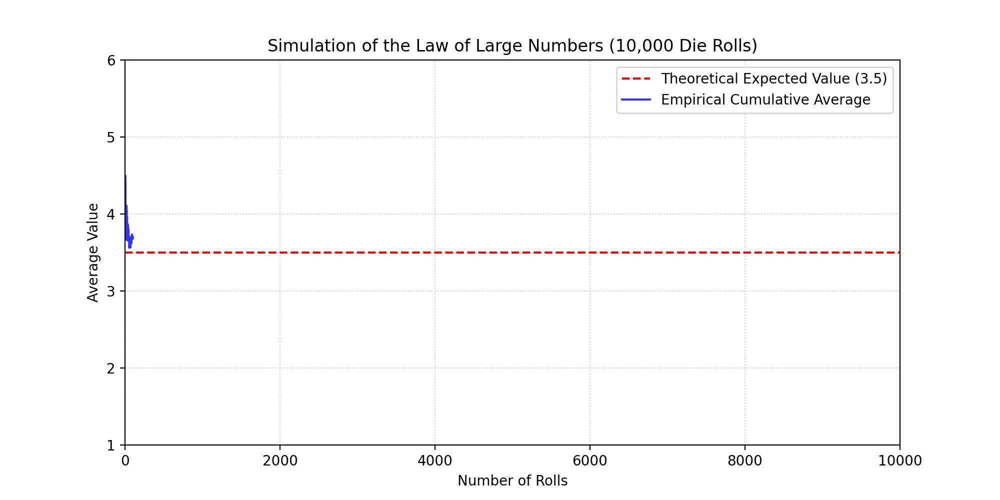
Python Simulation#
Here is a simulation of the Law of Large Numbers using Python:
import numpy as np
# Theoretical expected value for a fair die roll
expected_value = 3.5
for rolls in [10, 100, 1000, 10000, 100000]:
# Simulate die rolls (1 to 6)
simulated_rolls = np.random.randint(1, 7, size=rolls)
empirical_average = np.mean(simulated_rolls)
difference = abs(empirical_average - expected_value)
print(f"Rolls: {rolls:<6} | Average: {empirical_average:.4f} | Difference: {difference:.4f}")
Exercises#
Exercise 1
A coin is flipped 15 times. The coin is biased, with a probability of heads \(p = 0.7\). Calculate:
The probability of getting exactly 10 heads.
The probability of getting 12 or more heads.
Exercise 2
A test for a rare drug has a \(95\%\) true positive rate and a \(98\%\) true negative rate. Only \(0.5\%\) of tested people actually use the drug. If a randomly tested person tests positive, what is the probability that they are actually a drug user?
Exercise 3
You ran a small A/B test.
Variant A had 2 clicks and 8 ignores.
Variant B had 6 clicks and 4 ignores. Use
scipy.stats.betato find the probability that Variant B’s true CTR is greater than \(50\%\).
Solution — Exercise 1
from scipy.stats import binom
n = 15
p = 0.7
# 1. Exactly 10 heads
p_10 = binom.pmf(10, n, p)
print(f"Exactly 10: {p_10:.6f}")
# 2. 12 or more heads = 1 - P(<= 11)
p_12_plus = 1 - binom.cdf(11, n, p)
print(f"12 or more: {p_12_plus:.6f}")
Statistics#
Statistics is the discipline that concerns the collection, organization, analysis, interpretation, and presentation of data. While probability helps us predict future outcomes based on a known model, statistics works in reverse: we analyze observed data to infer the properties of the underlying system.
1. Descriptive vs. Inferential Statistics#
Descriptive Statistics: Summarizes and describes the characteristics of a dataset (e.g., mean, median, standard deviation).
Inferential Statistics: Uses a sample of data to make predictions or draw conclusions about a larger population.
2. Descriptive Statistics in Python#
Mean, Median, and Mode#
Mean: The arithmetic average.
Median: The middle value when data is sorted. Highly resistant to outliers.
Mode: The most frequent value.
Variance and Standard Deviation#
Variance (\(\sigma^2\)) and Standard Deviation (\(\sigma\)) measure the spread of data points around the mean.
Population Variance:
\[\sigma^2 = \frac{\sum (x_i - \mu)^2}{N}\]Sample Variance (Bessel’s correction uses \(n-1\) to account for sample bias):
\[s^2 = \frac{\sum (x_i - \bar{x})^2}{n - 1}\]
import numpy as np
from scipy import stats
data = [12, 15, 12, 18, 22, 15, 14, 15, 90] # Note the outlier: 90
mean = np.mean(data)
median = np.median(data)
mode = stats.mode(data, keepdims=True).mode[0]
# Sample Standard Deviation (ddof=1)
std_dev = np.std(data, ddof=1)
print(f"Mean : {mean:.2f}")
print(f"Median : {median:.2f}")
print(f"Mode : {mode}")
print(f"Sample Std Dev : {std_dev:.2f}")
Output:
Mean : 22.56
Median : 15.00
Mode : 15
Sample Std Dev : 25.56
3. The Normal Distribution#
The normal (or Gaussian) distribution is a continuous symmetric bell-shaped curve defined by its mean (\(\mu\)) and standard deviation (\(\sigma\)).
Z-score#
A Z-score indicates how many standard deviations a value is from the mean:
Python Implementation of Normal CDF and Percentiles#
from scipy.stats import norm
# Standard Normal Distribution (mean=0, std=1)
# What percentage of data falls below Z = 1.96?
pct_below_z = norm.cdf(1.96)
print(f"Percent below Z=1.96: {pct_below_z*100:.2f}%")
# Inverse CDF: What Z-score marks the 95th percentile?
z_95th = norm.ppf(0.95)
print(f"Z-score at 95th percentile: {z_95th:.4f}")
Output:
Percent below Z=1.96: 97.50%
Z-score at 95th percentile: 1.6449
4. Central Limit Theorem (CLT)#
The Central Limit Theorem states that if you take sufficiently large random samples from any population (even a non-normal one), the distribution of the sample means will approach a normal distribution as the sample size increases.
This allows us to perform statistical inference (like hypothesis testing) on non-normal data!
5. Confidence Intervals#
A confidence interval provides a range of values that is likely to contain the true population parameter.
The formula for the confidence interval of a mean is:
import numpy as np
from scipy import stats
sample_data = [12, 15, 12, 18, 22, 15, 14, 15, 19, 20]
n = len(sample_data)
mean = np.mean(sample_data)
sem = stats.sem(sample_data) # Standard Error of the Mean = s / sqrt(n)
# 95% Confidence Interval
ci_95 = stats.t.interval(0.95, df=n-1, loc=mean, scale=sem)
print(f"95% Confidence Interval for the mean: {ci_95[0]:.2f} to {ci_95[1]:.2f}")
Output:
95% Confidence Interval for the mean: 13.91 to 18.49
6. Hypothesis Testing & P-Values#
Hypothesis testing is a systematic way to evaluate claims about a population.
Null Hypothesis (\(H_0\)): The status quo; there is no effect or no difference.
Alternative Hypothesis (\(H_1\)): The claim we want to test.
P-value: The probability of obtaining test results at least as extreme as the observed results, assuming \(H_0\) is true. If \(p \leq 0.05\) (the significance level \(\alpha\)), we reject \(H_0\).
Example: One-Sample T-test#
A manufacturer claims their lightbulbs last 1000 hours on average. We test 10 bulbs and get the following lifespans:
from scipy import stats
lifespans = [980, 1010, 990, 970, 1005, 985, 995, 960, 1020, 980]
# Perform one-sample t-test against H0: mean = 1000
t_stat, p_val = stats.ttest_1samp(lifespans, 1000)
print(f"T-statistic: {t_stat:.4f}")
print(f"P-value : {p_val:.4f}")
if p_val < 0.05:
print("Reject H0: The mean lifespan is significantly different from 1000 hours.")
else:
print("Fail to reject H0: No significant difference from 1000 hours.")
Output:
T-statistic: -1.7454
P-value : 0.1149
Fail to reject H0: No significant difference from 1000 hours.
7. Z-Test vs. T-Test#
When performing hypothesis tests on a sample mean, you must choose between a Z-test and a T-test:
Feature |
Z-Test |
T-Test |
|---|---|---|
Sample Size |
Large (\(n \geq 30\)) |
Small (\(n < 30\)) |
Population Variance (\(\sigma^2\)) |
Known |
Unknown (must use sample variance \(s^2\)) |
Underlying Distribution |
Normal Distribution |
Student’s T-Distribution (wider tails to account for uncertainty) |
8. Type I and Type II Errors#
When testing hypothesis, decisions are made under uncertainty. This can lead to two types of errors:
Type I Error (\(\alpha\) / False Positive): Rejecting the null hypothesis (\(H_0\)) when it is actually true. Example: A spam filter classifying a legitimate email as spam.
Type II Error (\(\beta\) / False Negative): Failing to reject the null hypothesis (\(H_0\)) when it is actually false. Example: A spam filter letting a malicious email pass through to the inbox.
9. Chi-Square Test (\(\chi^2\)) for Categorical Data#
A Chi-Square Test is used to determine whether there is a statistically significant association between two categorical variables.
For instance, suppose we want to test if a customer’s subscription plan preference (Basic, Premium) is dependent on their region (US, EU):
import numpy as np
from scipy.stats import chi2_contingency
# Contingency table (observed counts)
# Rows: US, EU
# Columns: Basic, Premium
observed = np.array([
[150, 100], # US
[120, 130] # EU
])
# Perform Chi-Square Test
chi2_stat, p_val, dof, expected = chi2_contingency(observed)
print(f"Chi2 statistic : {chi2_stat:.4f}")
print(f"P-value : {p_val:.4f}")
if p_val < 0.05:
print("Subscription preferences are significantly associated with region.")
else:
print("Subscription preferences are independent of region.")
Exercises#
Exercise 1
You have a dataset of house prices: [250, 270, 310, 290, 850, 300, 260] (in thousands of dollars).
Calculate the mean and median.
Which measure is more appropriate for summarizing this dataset, and why?
Exercise 2
A sample of 50 students scored an average of 78 on an exam, with a sample standard deviation of 8. Compute the \(95\%\) confidence interval for the population mean.
Exercise 3
An online store wants to see if changing the color of the “Buy” button increases conversions.
Control group (Red): 100 purchases out of 1000 visits.
Treatment group (Green): 130 purchases out of 1000 visits. Perform a two-sample z-test for proportions to see if the green button performs significantly better (\(\alpha = 0.05\)).
Solution — Exercise 3
from statsmodels.stats.proportion import proportions_ztest
import numpy as np
count = np.array([130, 100]) # successes
nobs = np.array([1000, 1000]) # observations
# Perform z-test
stat, pval = proportions_ztest(count, nobs, alternative='larger')
print(f"Z-statistic: {stat:.4f}")
print(f"P-value : {pval:.5f}")
Introduction to Optimization#
Optimization is the process of finding the best solution from a set of feasible alternatives. A mathematical optimization problem has the general form:
Where:
\(x = (x_1, \dots, x_n)\) is the optimization variable.
\(f_0: \mathbb{R}^n \to \mathbb{R}\) is the objective function.
\(f_i(x) \leq b_i\) are the constraint functions.
1. Least-Squares & Linear Programming#
Depending on the mathematical properties of \(f_0\) and \(f_i\), optimization problems are classified into several major families.
Least-Squares#
A least-squares problem has no constraints and an objective function that is a sum of squares:
This problem can be solved analytically (\(x = (A^T A)^{-1} A^T b\)). It is the foundation of Linear Regression in machine learning.
Linear Programming (LP)#
In Linear Programming, both the objective and constraint functions are linear:
LPs do not have analytical solutions but can be solved extremely fast using algorithms like the Simplex method or Interior-point methods.
2. Convex vs. Non-linear Optimization#
The boundary in optimization is not between linearity and non-linearity, but between convexity and non-convexity.
Property |
Convex Optimization |
Non-convex / Nonlinear Optimization |
|---|---|---|
Geometry |
objective function is convex, constraint set is convex. |
objective or constraints are non-convex (curves bend down). |
Minima |
Any local minimum is a global minimum. |
Many local minima and saddle points exist. |
Solvability |
Can be solved efficiently, reliably, and globally. |
Hard to solve; algorithms often get stuck in local minima. |
Exercises#
Exercise 1
Classify the following optimization problem (find if it is LP, Least-Squares, or Nonlinear): $\(\text{minimize} \quad (3x_1 + x_2 - 5)^2 + (x_1 - 2x_2 + 1)^2\)$
Solution — Exercise 1
This objective is a sum of squared linear terms: $\(f(x) = \|Ax - b\|_2^2\)\( Where \)A = \begin{bmatrix} 3 & 1 \ 1 & -2 \end{bmatrix}\( and \)b = \begin{bmatrix} 5 \ -1 \end{bmatrix}$. Therefore, this is a Least-Squares problem.
Convex Sets & Functions#
This page covers the mathematical definition and geometric properties of convex sets and convex functions, based on Chapters 2 and 3 of Stephen Boyd’s Convex Optimization.
Part I: Convex Sets#
A set \(C \subseteq \mathbb{R}^n\) is convex if the line segment between any two points in \(C\) lies entirely in \(C\). That is, for any \(x_1, x_2 \in C\) and \(0 \leq \theta \leq 1\):
Part II: Convex Functions (Chapter 3)#
A function \(f: \mathbb{R}^n \to \mathbb{R}\) is convex if its domain \(\text{dom } f\) is a convex set and for all \(x, y \in \text{dom } f\), \(0 \leq \theta \leq 1\):
1. Basic Properties and Examples (3.1)#
First-order Condition for Convexity#
A differentiable function \(f\) is convex if and only if \(\text{dom } f\) is convex and:
Geometrically, the tangent plane at any point acts as a global lower bound.
Second-order Condition for Convexity#
A twice-differentiable function \(f\) is convex if and only if its Hessian matrix is positive semi-definite:
Important Examples:#
Exponential: \(e^{ax}\) is convex on \(\mathbb{R}\).
Powers: \(x^p\) is convex on \(\mathbb{R}_{++}\) for \(p \geq 1\) or \(p \leq 0\).
Negative Logarithm: \(-\ln(x)\) is convex on \(\mathbb{R}_{++}\).
Max function: \(\max(x_1, \dots, x_n)\) is convex on \(\mathbb{R}^n\).
2. Operations that Preserve Convexity (3.2)#
Nonnegative weighted sum: \(f = w_1 f_1 + w_2 f_2\) is convex if \(f_1, f_2\) are convex and \(w_1, w_2 \geq 0\).
Composition with affine mapping: \(g(x) = f(Ax + b)\) is convex if \(f\) is convex.
Pointwise maximum: If \(f_s(x)\) is convex for each \(s \in \mathcal{S}\), then \(f(x) = \sup_{s \in \mathcal{S}} f_s(x)\) is convex.
Partial Minimization: If \(g(x, y)\) is convex in \((x, y)\) and \(C\) is a convex set, then \(f(x) = \inf_{y \in C} g(x, y)\) is convex.
3. The Conjugate Function (3.3)#
Let \(f: \mathbb{R}^n \to \mathbb{R}\). The conjugate function \(f^*: \mathbb{R}^n \to \mathbb{R}\) (also known as the Fenchel conjugate) is defined as:
The conjugate function \(f^*\) is always convex, even if the original function \(f\) is not convex, because it is the pointwise supremum of a family of affine functions of \(y\).
Example:#
For \(f(x) = \frac{1}{2} x^T Q x\) where \(Q\) is symmetric positive definite: $\(f^*(y) = \frac{1}{2} y^T Q^{-1} y\)$
4. Quasiconvex Functions (3.4)#
A function \(f: \mathbb{R}^n \to \mathbb{R}\) is quasiconvex (or unimodal) if its domain and all its sublevel sets are convex:
For a quasiconvex function, any point between two points cannot have a value higher than the maximum of the two points: $\(f(\theta x + (1-\theta)y) \leq \max(f(x), f(y))\)$
Example: \(f(x) = \sqrt{|x|}\) is quasiconvex on \(\mathbb{R}\) (but not convex).
5. Log-Concave and Log-Convex Functions (3.5)#
A function \(f: \mathbb{R}^n \to \mathbb{R}\) is log-concave if \(f(x) > 0\) for all \(x \in \text{dom } f\) and \(\ln f(x)\) is a concave function. Similarly, \(f\) is log-convex if \(\ln f(x)\) is convex.
Probability Applications:#
Many common probability density functions (PDFs) are log-concave, which makes maximum likelihood estimation (MLE) solvable as a convex optimization problem:
Normal Distribution: \(f(x) = \frac{1}{\sigma \sqrt{2\pi}} e^{-\frac{(x-\mu)^2}{2\sigma^2}}\) is log-concave.
6. Convexity with Respect to Generalized Inequalities (3.6)#
Let \(K \subseteq \mathbb{R}^m\) be a proper cone.
A function \(f: \mathbb{R}^n \to \mathbb{R}^m\) is \(K\)-convex if for all \(x, y \in \text{dom } f\) and \(0 \leq \theta \leq 1\):
This maps the classical definition of convexity to vector-valued functions using cone-based ordering relations.
Exercises#
Exercise 1
Find the conjugate function \(f^*(y)\) of the negative entropy function: $\(f(x) = x \ln x \quad (\text{domain } x > 0)\)$
Solution — Exercise 1
The conjugate is defined as \(f^*(y) = \sup_{x > 0} (yx - x \ln x)\). To find the supremum, take the derivative with respect to \(x\) and set to zero: $\(\frac{d}{dx}(yx - x\ln x) = y - \ln x - 1 = 0 \implies \ln x = y - 1 \implies x^* = e^{y-1}\)\( Substitute \)x^\( back into the equation: \)\(f^*(y) = y(e^{y-1}) - e^{y-1}(y-1) = e^{y-1}(y - y + 1) = e^{y-1}\)\( Thus, the conjugate function is \)f^(y) = e^{y-1}$.
Convex Optimization Problems#
This page covers the mathematical formulation and classification of optimization problems based on Chapter 4 of Stephen Boyd’s Convex Optimization.
1. General Optimization Problems (4.1)#
A general mathematical optimization problem has the form:
Where:
\(x \in \mathbb{R}^n\) is the optimization variable.
\(f_0(x)\) is the objective function.
\(f_i(x) \leq 0\) are the inequality constraints.
\(h_i(x) = 0\) are the equality constraints.
The set of points for which the objective and all constraint functions are defined is the domain \(\mathcal{D}\). A point \(x \in \mathcal{D}\) is feasible if it satisfies all constraints. The optimal value \(p^*\) is defined as:
2. Convex Optimization Problems (4.2)#
A convex optimization problem is one of the form:
Where:
The objective function \(f_0\) must be convex.
The inequality constraint functions \(f_1, \dots, f_m\) must be convex.
The equality constraints must be affine (\(A x = b\)).
Key Property: Local Minima are Global#
For a convex optimization problem, any local optimal point is also globally optimal.
3. Linear Optimization Problems - LP (4.3)#
When both the objective and constraint functions are affine, the problem is called a Linear Program (LP):
LPs are widely used in operations research, logistics, and resource allocation.
4. Quadratic Optimization Problems - QP (4.4)#
A Quadratic Program (QP) has a convex quadratic objective and affine constraints:
Where \(P\) is symmetric positive semi-definite (\(P \succeq 0\)). If the inequality constraints are also quadratic, it is called a Quadratically Constrained Quadratic Program (QCQP).
5. Geometric Programming - GP (4.5)#
A Geometric Program (GP) involves objective and constraint functions that are posynomials (sums of monomials). A monomial has the form \(cx_1^{a_1}x_2^{a_2}\dots x_n^{a_n}\) where \(c > 0\).
Although GPs are not convex in their original form, they can be transformed into convex problems using a change of variables \(y_i = \ln(x_i)\) and taking the logarithm of the objective and constraints.
6. Generalized Inequality Constraints (4.6)#
We can extend convex optimization to problems with constraints defined by a proper cone \(K\):
Where \(f_i(x) \preceq_K 0\) means \(-f_i(x) \in K\). This formulation includes Semidefinite Programming (SDP) and Cone Programming.
7. Vector Optimization (4.7)#
In many practical situations, we want to optimize multiple objectives simultaneously (multicriterion optimization):
Since it is usually impossible to minimize all objectives at once, we look for Pareto optimal solutions. A feasible point \(x\) is Pareto optimal if there is no other feasible point \(y\) that performs better or equal in all objectives and strictly better in at least one.
Exercises#
Exercise 1
Formulate the following problem as a Quadratic Program (QP): $\(\text{minimize} \quad (x_1 - x_2)^2 + 3(x_2 - 2)^2 \quad \text{subject to} \quad x_1 + x_2 \geq 1\)$
Solution — Exercise 1
Expand the objective function: $\(f(x) = x_1^2 - 2x_1x_2 + x_2^2 + 3(x_2^2 - 4x_2 + 4) = x_1^2 - 2x_1x_2 + 4x_2^2 - 12x_2 + 12\)\( This can be written in matrix form \)\frac{1}{2} x^T P x + q^T x + r\( with: \)\(P = \begin{bmatrix} 2 & -2 \\ -2 & 8 \end{bmatrix}, \quad q = \begin{bmatrix} 0 \\ -12 \end{bmatrix}, \quad r = 12\)\( Since eigenvalues of \)P\( are positive (\)P \succeq 0\(), the objective is convex. The constraint \)x_1 + x_2 \geq 1\( can be written as \)-x_1 - x_2 \leq -1\( (which is \)Gx \leq h\( where \)G = [-1, -1]\(, \)h = -1$). Thus, it is a QP.
Duality & KKT Conditions#
Duality allows us to view an optimization problem from two perspectives: the Primal problem (original variables) and the Dual problem (constraints coefficients). This page covers Lagrange Duality and the famous Karush-Kuhn-Tucker (KKT) optimality conditions.
1. The Lagrange Dual Function#
For the primal problem:
We define the Lagrangian \(L: \mathbb{R}^n \times \mathbb{R}^m \times \mathbb{R}^p \to \mathbb{R}\) by associating Lagrange multipliers \(\lambda_i \geq 0\) and \(\nu_i\) with the constraints:
The Lagrange dual function \(g(\lambda, \nu)\) is the minimum value of the Lagrangian over \(x\):
The Lower Bound Property#
For any \(\lambda \geq 0\) and any \(\nu\), the dual function gives a lower bound on the optimal value \(p^*\) of the primal problem:
2. Strong Duality & Weak Duality#
The Lagrange dual problem is to find the best lower bound:
Let \(d^*\) be the optimal value of the dual problem.
Weak Duality: \(d^* \leq p^*\) always holds (even for non-convex problems).
Strong Duality: \(d^* = p^*\) holds (usually for convex problems satisfying Slater’s constraint qualification).
3. Karush-Kuhn-Tucker (KKT) Conditions#
For any optimization problem with differentiable objective and constraint functions for which strong duality holds, any primal-optimal \(x^*\) and dual-optimal \((\lambda^*, \nu^*)\) must satisfy the KKT conditions:
Primal Feasibility:
\[f_i(x^*) \leq 0, \quad i=1,\dots,m\]\[h_i(x^*) = 0, \quad i=1,\dots,p\]Dual Feasibility:
\[\lambda^* \succeq 0\]Complementary Slackness:
\[\lambda_i^* f_i(x^*) = 0, \quad i=1,\dots,m\]Lagrangian Stationarity (Gradient is zero):
\[\nabla f_0(x^*) + \sum_{i=1}^m \lambda_i^* \nabla f_i(x^*) + \sum_{i=1}^p \nu_i^* \nabla h_i(x^*) = 0\]
If the primal problem is convex, the KKT conditions are not only necessary but also sufficient for optimality.
Exercises#
Exercise 1
Explain the meaning of Complementary Slackness (\(\lambda_i^* f_i(x^*) = 0\)).
Solution — Exercise 1
Complementary slackness states that for each inequality constraint \(f_i(x) \leq 0\):
If the constraint is inactive at the optimum (\(f_i(x^*) < 0\)), then the multiplier must be zero (\(\lambda_i^* = 0\)).
If the multiplier is positive (\(\lambda_i^* > 0\)), then the constraint must be active (\(f_i(x^*) = 0\)).
This is the mathematical backing for Support Vectors in SVMs, where only data points on the boundary (active constraints) have non-zero Lagrange weights.
Gradient Descent & Hessian Curvature#
In continuous optimization, we find minimum or maximum values of functions using derivatives. This page covers Gradient Descent (first-order optimization) and the Hessian matrix (second-order optimization).
1. Local Extrema & Second Derivative Test#
To find the minimum or maximum of a multivariable function \(f(x, y)\), we start by finding the critical points where the gradient is zero:
Once we find a critical point, we use the Hessian matrix \(\mathbf{H}\) (which captures the curvature of the function) to determine its nature:
Using the eigenvalues of the Hessian matrix at the critical point:
Local Minimum: If \(\mathbf{H}\) is positive-definite (all eigenvalues \(>0\)). The curve bends upwards.
Local Maximum: If \(\mathbf{H}\) is negative-definite (all eigenvalues \(<0\)). The curve bends downwards.
Saddle Point: If \(\mathbf{H}\) has both positive and negative eigenvalues. The curve bends up in one direction and down in another.
2. Gradient Descent#
When a function is too complex to solve analytically, we use Gradient Descent, an iterative optimization algorithm.
Since the gradient \(\nabla f\) points in the direction of the steepest increase, updating our variables in the opposite direction (\(-\nabla f\)) moves us down toward the minimum:
Where \(\alpha\) is the learning rate (step size).
Python Implementation#
Let’s minimize the function \(f(x) = x^2 - 4x + 4\) (which has a minimum at \(x=2\), where the gradient is \(2x-4\)).
x = 10.0 # Starting point
learning_rate = 0.1
epochs = 20
for epoch in range(epochs):
gradient = 2 * x - 4
x = x - learning_rate * gradient
loss = x**2 - 4*x + 4
print(f"Epoch {epoch+1:02d}: x = {x:.4f}, Loss = {loss:.4f}")
3. Quadratic Optimization with SymPy#
We can use SymPy to find the analytical Hessian and determine the nature of critical points:
import sympy as sp
x, y = sp.symbols('x y')
f = x**2 + y**2 - 4*x - 6*y
# 1. Find critical points by solving Gradient = 0
grad_x = sp.diff(f, x)
grad_y = sp.diff(f, y)
critical_points = sp.solve([grad_x, grad_y], (x, y))
print("Critical Point:", critical_points)
# 2. Compute the Hessian matrix
H = sp.hessian(f, (x, y))
print("\nHessian Matrix:")
sp.pprint(H)
Exercises#
Exercise 1
Perform 3 iterations of Gradient Descent manually for the function \(f(x) = x^2\). Start at \(x_0 = 4\) with a learning rate \(\alpha = 0.1\).
Solution — Exercise 1
The derivative is \(f'(x) = 2x\).
Iteration 1:
\[x_1 = x_0 - \alpha \cdot f'(x_0) = 4 - 0.1(2 \cdot 4) = 4 - 0.8 = 3.2\]Iteration 2:
\[x_2 = x_1 - \alpha \cdot f'(x_1) = 3.2 - 0.1(2 \cdot 3.2) = 3.2 - 0.64 = 2.56\]Iteration 3:
\[x_3 = x_2 - \alpha \cdot f'(x_2) = 2.56 - 0.1(2 \cdot 2.56) = 2.56 - 0.512 = 2.048\]
Optimization Algorithms#
To solve unconstrained and constrained minimization problems, we rely on iterative numerical methods. This page covers Gradient Descent, Newton’s Method, and Interior-point barrier methods.
1. Unconstrained Minimization#
We want to solve: $\(\text{minimize} \quad f(x)\)$
Where \(f\) is twice differentiable and convex.
Descent Methods#
A descent method produces a sequence of steps \(x^{(k+1)} = x^{(k)} + t^{(k)} \Delta x^{(k)}\) where:
\(\Delta x^{(k)}\) is the step direction (ensuring \(\nabla f(x)^T \Delta x < 0\)).
\(t^{(k)} > 0\) is the step size (learning rate), often calculated using backtracking line search.
Gradient Descent Method#
The search direction is the negative gradient: $\(\Delta x = -\nabla f(x)\)$
Newton’s Method#
Newton’s method incorporates second-order curvature: $\(\Delta x_{\text{nt}} = -(\nabla^2 f(x))^{-1} \nabla f(x)\)$
Newton’s method converges much faster than gradient descent (quadratic convergence) because it scales the gradient step using the inverse Hessian.
2. Equality & Inequality Constraints (Interior-Point Methods)#
Logarithmic Barrier#
To solve problems with inequality constraints \(f_i(x) \leq 0\), we approximate them using an indicator function, which we smooth using the logarithmic barrier:
As \(f_i(x) \to 0\), the log barrier \(\Phi(x) \to \infty\), preventing the optimization from stepping outside the feasible region.
The Barrier Method#
The Barrier method solves a sequence of unconstrained problems: $\(\text{minimize} \quad t f_0(x) + \Phi(x)\)\( for increasing values of \)t > 0$, tracing the central path directly to the global optimum.
3. Python Comparison: Gradient Descent vs. Newton’s Method#
import numpy as np
# Function: f(x) = x^4, f'(x) = 4x^3, f''(x) = 12x^2
# Minimum is at x = 0
# 1. Gradient Descent
x_gd = 2.0
lr = 0.05
for i in range(5):
grad = 4 * x_gd**3
x_gd -= lr * grad
print(f"GD Step {i+1}: x = {x_gd:.4f}")
# 2. Newton's Method
x_newton = 2.0
for i in range(5):
grad = 4 * x_newton**3
hessian = 12 * x_newton**2
x_newton -= grad / hessian # Newton step: - f'/f''
print(f"Newton Step {i+1}: x = {x_newton:.4f}")
Exercises#
Exercise 1
Calculate 1 step of Newton’s method starting at \(x_0 = 2\) for the function \(f(x) = x^3 - 2x^2\).
Solution — Exercise 1
Derivatives:
\(f'(x) = 3x^2 - 4x \implies f'(2) = 3(4) - 4(2) = 4\)
\(f''(x) = 6x - 4 \implies f''(2) = 6(2) - 4 = 8\)
Newton step: $\(x_1 = x_0 - \frac{f'(x_0)}{f''(x_0)} = 2 - \frac{4}{8} = 1.5\)$
Combinatorial Optimization & Scheduling#
Unlike continuous optimization where variables can take any decimal value, Combinatorial Optimization deals with problems where the variables are discrete (e.g., integers, binary choices, or ordering permutations).
Many of these problems are NP-hard, meaning they cannot be solved to absolute perfection in polynomial time for large datasets. Instead, we use solvers and heuristics.
1. The Traveling Salesperson Problem (TSP)#
In the Traveling Salesperson Problem (TSP), a salesperson must visit a set of cities exactly once and return to the starting city. The goal is to find the shortest possible route.
Formulation#
Given a distance matrix \(D\) where \(d_{ij}\) is the distance from city \(i\) to city \(j\), we want to find a permutation of cities \(\pi\) that minimizes:
TSP is a classic routing problem used in logistics, package delivery, and microchip manufacturing.
2. The Job Shop Scheduling Problem (JSSP)#
The Job Shop Scheduling Problem (JSSP) is one of the most famous scheduling problems in industrial engineering and operations research.
Problem Definition:#
We have a set of Jobs (e.g., manufacturing specific products).
Each Job consists of a sequence of Tasks that must be executed in a strict order.
Each Task must be processed on a specific Machine for a given duration.
Constraints:
A machine can only process one task at a time (no overlap).
Tasks of a single job must be processed in sequence.
Objective: Minimize the makespan (the total time to complete all jobs).
3. Python Implementation: Solving JSSP with Google OR-Tools#
We can use Google’s OR-Tools (Constraint Programming CP-SAT solver) to solve a small JSSP instance.
Instance Definition:#
Job 0:
Task 1: Machine 0, duration 3
Task 2: Machine 1, duration 2
Task 3: Machine 2, duration 2
Job 1:
Task 1: Machine 0, duration 2
Task 2: Machine 2, duration 1
Task 3: Machine 1, duration 4
Job 2:
Task 1: Machine 1, duration 4
Task 2: Machine 2, duration 3
from ortools.sat.python import cp_model
# 1. Initialize CP-SAT model
model = cp_model.CpModel()
# 2. Define data
jobs_data = [
[(0, 3), (1, 2), (2, 2)], # Job 0
[(0, 2), (2, 1), (1, 4)], # Job 1
[(1, 4), (2, 3)] # Job 2
]
num_machines = 3
all_machines = range(num_machines)
all_jobs = range(len(jobs_data))
# Find horizon (upper bound of makespan)
horizon = sum(task[1] for job in jobs_data for task in job)
# 3. Create variables
all_tasks = {}
machine_to_intervals = {m: [] for m in all_machines}
for job_id, job in enumerate(jobs_data):
for task_id, task in enumerate(job):
machine = task[0]
duration = task[1]
suffix = f"_{job_id}_{task_id}"
start_var = model.NewIntVar(0, horizon, f"start{suffix}")
end_var = model.NewIntVar(0, horizon, f"end{suffix}")
interval_var = model.NewIntervalVar(start_var, duration, end_var, f"interval{suffix}")
all_tasks[job_id, task_id] = (start_var, end_var, interval_var)
machine_to_intervals[machine].append(interval_var)
# 4. Add overlap constraints (no two tasks on the same machine can overlap)
for machine in all_machines:
model.AddNoOverlap(machine_to_intervals[machine])
# 5. Add precedence constraints (tasks of a job must run sequentially)
for job_id, job in enumerate(jobs_data):
for task_id in range(len(job) - 1):
model.Add(all_tasks[job_id, task_id + 1][0] >= all_tasks[job_id, task_id][1])
# 6. Define makespan objective (minimize the maximum end time)
makespan = model.NewIntVar(0, horizon, "makespan")
model.AddMaxEquality(makespan, [all_tasks[job_id, len(job) - 1][1] for job_id, job in enumerate(jobs_data)])
model.Minimize(makespan)
# 7. Solve
solver = cp_model.CpSolver()
status = solver.Solve(model)
if status == cp_model.OPTIMAL or status == cp_model.FEASIBLE:
print(f"Optimal Makespan: {solver.ObjectiveValue()}")
for job_id, job in enumerate(jobs_data):
for task_id, task in enumerate(job):
start = solver.Value(all_tasks[job_id, task_id][0])
print(f"Job {job_id}, Task {task_id} starts at {start}")
Exercises#
Exercise 1
Consider a JSSP with 2 machines (\(M_0, M_1\)) and 1 job. The job has 2 tasks:
Task 0: requires \(M_0\), duration = 4.
Task 1: requires \(M_1\), duration = 3. What is the minimum makespan if Task 1 must follow Task 0?
Solution — Exercise 1
Since there is only one job, and Task 1 must wait for Task 0 to finish:
Task 0 starts at \(t=0\), ends at \(t=4\).
Task 1 starts at \(t=4\) (earliest possible), ends at \(t=4+3=7\). The minimum makespan is 7.
Functional Analysis & Operator Theory#
Functional Analysis is the branch of mathematics that generalizes linear algebra from finite-dimensional vector spaces to infinite-dimensional spaces. It provides the rigorous mathematical framework for quantum mechanics, differential equations, and advanced machine learning models (such as kernel methods, Support Vector Machines, and Reproducing Kernel Hilbert Spaces).
Lecture 1: Basic Banach Space Theory#
Normed Vector Spaces#
Let \(X\) be a vector space over a field \(K\) (where \(K = \mathbb{R}\) or \(\mathbb{C}\)). A norm on \(X\) is a function \(\|\cdot\|: X \to \mathbb{R}\) satisfying three axioms for all \(x, y \in X\) and \(\alpha \in K\):
Positive Definiteness: \(\|x\| \ge 0\), and \(\|x\| = 0\) if and only if \(x = 0\).
Absolute Homogeneity: \(\|\alpha x\| = |\alpha| \|x\|\).
Triangle Inequality: \(\|x + y\| \le \|x\| + \|y\|\).
A vector space equipped with a norm is called a normed vector space \((X, \|\cdot\|)\).
Completeness and Banach Spaces#
A sequence \(\{x_n\}\) in a normed space \(X\) is a Cauchy sequence if for every \(\epsilon > 0\), there exists an integer \(N\) such that:
A normed space \(X\) is complete if every Cauchy sequence in \(X\) converges to a limit that also lies within \(X\).
Banach Space: A complete normed vector space is called a Banach space.
Examples:
Finite-Dimensional: \(\mathbb{R}^n\) and \(\mathbb{C}^n\) are complete under any norm.
Sequence Spaces: \(l^p\) spaces (the set of sequences whose \(p\)-th power sums are finite) are Banach spaces under the norm \(\|x\|_p = (\sum |x_i|^p)^{1/p}\).
Continuous Functions: \(C([a,b])\), the space of continuous functions on an interval, is a Banach space under the supremum norm \(\|f\|_\infty = \sup_{t \in [a,b]} |f(t)|\).
Lecture 2: Bounded Linear Operators#
A function \(T: X \to Y\) between two normed vector spaces is a linear operator if \(T(\alpha x + \beta y) = \alpha Tx + \beta Ty\) for all \(x, y \in X\) and scalars \(\alpha, \beta\).
Boundedness and Continuity#
A linear operator \(T: X \to Y\) is bounded if there exists a constant \(M \ge 0\) such that:
Theorem: For a linear operator \(T\), the following statements are equivalent:
\(T\) is continuous at \(x = 0\).
\(T\) is continuous everywhere on \(X\).
\(T\) is bounded.
The Operator Norm#
For a bounded linear operator \(T: X \to Y\), the operator norm \(\|T\|\) is defined as the supremum of the ratio of the output norm to the input norm:
The set of all bounded linear operators from \(X\) to \(Y\) is denoted as \(B(X, Y)\). If \(Y\) is a Banach space, then \(B(X, Y)\) is also a Banach space under the operator norm.
Lecture 3: Quotient Spaces & The Baire Category Theorem#
Quotient Spaces#
Let \(X\) be a normed space and \(M \subseteq X\) be a closed subspace. The quotient space \(X/M\) is the set of equivalence classes (cosets) \([x] = x + M\) under the norm:
Theorem: If \(X\) is a Banach space, then the quotient space \(X/M\) is also a Banach space under this quotient norm.
Baire Category Theorem#
The Baire Category Theorem is a foundational topological property of complete metric spaces.
Theorem: Let \(X\) be a complete metric space. If \(X\) is written as a countable union of closed subsets \(X = \bigcup_{n=1}^\infty F_n\), then at least one of the subsets \(F_n\) must have a non-empty interior.
Intuition: A complete space cannot be constructed by gluing together a countable number of “thin” (nowhere dense) sets.
Uniform Boundedness Principle (Banach-Steinhaus Theorem)#
Using Baire’s theorem, we can prove that pointwise boundedness of a family of operators implies uniform boundedness.
Theorem: Let \(X\) be a Banach space and \(Y\) be a normed space. Let \(\mathcal{F} \subseteq B(X, Y)\) be a family of bounded linear operators. If for each \(x \in X\), there exists \(C_x \ge 0\) such that: $\(\|Tx\|_Y \le C_x \quad \text{for all } T \in \mathcal{F}\)\( then the operators are uniformly bounded: \)\(\sup_{T \in \mathcal{F}} \|T\| < \infty\)$
Lecture 4: The Open Mapping & Closed Graph Theorems#
These theorems describe the properties of linear operators between Banach spaces.
The Open Mapping Theorem#
A mapping \(T: X \to Y\) is an open map if the image of every open set in \(X\) is an open set in \(Y\).
Theorem: Let \(X\) and \(Y\) be Banach spaces. If \(T: X \to Y\) is a bounded linear operator that is surjective (onto), then \(T\) is an open mapping.
Bounded Inverse Theorem: If a bounded linear operator \(T: X \to Y\) between Banach spaces is bijective (one-to-one and onto), then its inverse \(T^{-1}: Y \to X\) is automatically bounded.
The Closed Graph Theorem#
Let \(T: X \to Y\) be an operator. The graph of \(T\) is the set \(\Gamma(T) = \{(x, Tx) \mid x \in X\} \subseteq X \times Y\). We say \(T\) has a closed graph if \(\Gamma(T)\) is a closed subspace of \(X \times Y\) under the product norm.
Theorem: Let \(X\) and \(Y\) be Banach spaces. A linear operator \(T: X \to Y\) is bounded if and only if its graph is closed.
Practical Use: To prove an operator is continuous, we only need to show that if \(x_n \to 0\) and \(Tx_n \to y\), then \(y = 0\).
Lecture 5: Zorn’s Lemma & The Hahn-Banach Theorem#
The Hahn-Banach Theorem guarantees that there are “enough” continuous linear functionals on a normed space to separate points.
Zorn’s Lemma#
Zorn’s Lemma is an axiom equivalent to the Axiom of Choice.
Poset: A set equipped with a partial order \(\le\).
Chain: A subset of a poset where every pair of elements is comparable.
Theorem: If every chain in a poset \(P\) has an upper bound in \(P\), then \(P\) contains at least one maximal element.
The Hahn-Banach Extension Theorem#
Let \(X\) be a vector space and \(p: X \to \mathbb{R}\) be a sublinear functional (satisfying \(p(x+y) \le p(x) + p(y)\) and \(p(\alpha x) = \alpha p(x)\) for \(\alpha \ge 0\)).
Theorem (Real Vector Spaces): Let \(M \subseteq X\) be a subspace, and \(f: M \to \mathbb{R}\) be a linear functional bounded by \(p\): $\(f(x) \le p(x) \quad \text{for all } x \in M\)\( Then there exists a linear functional \)F: X \to \mathbb{R}\( extending \)f\( (\)F(x) = f(x)\( for all \)x \in M\() such that: \)\(F(x) \le p(x) \quad \text{for all } x \in X\)$
Normed Spaces Corollary: Let \(M\) be a subspace of a normed space \(X\), and \(f \in M^*\). Then \(f\) can be extended to a functional \(F \in X^*\) such that the norms are preserved: $\(\|F\|_{X^*} = \|f\|_{M^*}\)$
Lecture 6 (Part 1): The Double Dual & Reflexivity#
The Dual Space (\(X^*\))#
For a normed space \(X\), the space of all bounded linear functionals \(f: X \to K\) is the dual space \(X^* = B(X, K)\). Since the field \(K\) (\(\mathbb{R}\) or \(\mathbb{C}\)) is complete, \(X^*\) is always a Banach space.
The Double Dual (\(X^{**}\))#
The double dual (or bidual) \(X^{**} = (X^*)^*\) is the dual of \(X^*\).
There is a natural map called the canonical injection \(J: X \to X^{**}\) defined by evaluating a functional at a point \(x\):
Theorem: The canonical injection \(J\) is an isometric isomorphism (it preserves norms: \(\|J(x)\|_{X^{**}} = \|x\|_X\)).
Reflexive Spaces: If \(J\) is surjective (meaning \(J(X) = X^{**}\)), the Banach space \(X\) is said to be reflexive.
Examples: All Hilbert spaces and \(L^p\) spaces for \(1 < p < \infty\) are reflexive. The spaces \(L^1\) and \(C([a,b])\) are not reflexive.
Measure Theory & Lebesgue Integration#
Classical Riemann integration is sufficient for basic functions, but fails for highly discontinuous functions (such as the Dirichlet function). Measure Theory provides the rigorous generalization of length, area, and volume, underpinning modern Probability Theory and integration.
Lecture 6 (Part 2): Outer Measure#
To measure the “size” of arbitrary subsets of real numbers, we introduce the concept of Outer Measure.
Definition of Outer Measure#
The Lebesgue outer measure \(\mu^*: \mathcal{P}(\mathbb{R}) \to [0, \infty]\) of a subset \(A \subseteq \mathbb{R}\) is the infimum of the sum of lengths of open intervals that cover \(A\):
Properties of Outer Measure#
Empty Set: \(\mu^*(\emptyset) = 0\).
Monotonicity: If \(A \subseteq B\), then \(\mu^*(A) \le \mu^*(B)\).
Countable Subadditivity: For any countable collection of sets \(\{A_n\}\), the outer measure of their union is bounded by the sum of their individual outer measures:
Lecture 7: Sigma Algebras (\(\sigma\)-algebras)#
We cannot define a consistent measure on all subsets of \(\mathbb{R}\) while preserving translation-invariance and countable additivity (due to Vitali sets). Therefore, we must restrict our measure to a collection of “well-behaved” sets called a \(\sigma\)-algebra.
Definition of a \(\sigma\)-algebra#
Let \(X\) be a set. A collection \(\Sigma\) of subsets of \(X\) is a \(\sigma\)-algebra if it satisfies three axioms:
Contains the Whole Set: \(X \in \Sigma\).
Closed under Complement: If \(A \in \Sigma\), then \(A^c = X \setminus A \in \Sigma\).
Closed under Countable Unions: If \(\{A_n\}_{n=1}^\infty \subseteq \Sigma\), then:
The Borel \(\sigma\)-algebra (\(\mathcal{B}(\mathbb{R})\))#
The Borel \(\sigma\)-algebra on \(\mathbb{R}\) is the smallest \(\sigma\)-algebra that contains all open intervals \((a, b)\). It includes all open sets, closed sets (as complements of open sets), countable intersections of open sets (\(G_\delta\) sets), and countable unions of closed sets (\(F_\sigma\) sets).
Lecture 8: Lebesgue Measurable Sets & Measure#
Carathéodory’s Condition#
To select the well-behaved subsets of \(\mathbb{R}\), we use Constantin Carathéodory’s slicing condition.
A set \(E \subseteq \mathbb{R}\) is Lebesgue measurable if it splits any arbitrary “test set” \(A \subseteq \mathbb{R}\) additively:
The collection of all Lebesgue measurable sets forms a \(\sigma\)-algebra, denoted by \(\mathcal{M}\).
The Lebesgue Measure (\(\mu\))#
When we restrict the outer measure \(\mu^*\) to the \(\sigma\)-algebra of measurable sets \(\mathcal{M}\), it is called the Lebesgue measure \(\mu\). Unlike outer measure, the Lebesgue measure is countably additive:
If \(\{E_n\}_{n=1}^\infty\) is a countable collection of pairwise disjoint measurable sets, then:
Null Sets: A set \(N\) is a null set if \(\mu^*(N) = 0\). Every subset of a null set is Lebesgue measurable (with measure 0), making the Lebesgue measure space complete.
Lecture 9: Lebesgue Measurable Functions#
In integration, we integrate functions. For a function to be integrable, it must map measurable sets to measurable sets.
Definition of Measurable Functions#
Let \((X, \Sigma)\) be a measurable space. A function \(f: X \to \overline{\mathbb{R}}\) (where \(\overline{\mathbb{R}} = \mathbb{R} \cup \{-\infty, \infty\}\)) is measurable if the preimage of every open interval is a measurable set:
Theorem: If \(\{f_n\}\) is a sequence of measurable functions, then the functions \(\inf f_n\), \(\sup f_n\), \(\liminf f_n\), and \(\limsup f_n\) are also measurable. If the pointwise limit \(f(x) = \lim_{n \to \infty} f_n(x)\) exists, then \(f\) is measurable.
Lecture 10: Simple Functions & The Lebesgue Integral#
To construct the Lebesgue integral, we build it from the bottom up, starting with simple step-like functions.
Simple Functions#
A simple function \(\phi: X \to \mathbb{R}\) is a real-valued function that takes only a finite number of distinct values. It can be written in its canonical representation:
where:
\(c_i\) are distinct real numbers.
\(E_i = \{x \in X \mid \phi(x) = c_i\}\) are pairwise disjoint measurable sets.
\(\chi_{E_i}\) is the indicator function of \(E_i\) (\(\chi_{E_i}(x) = 1\) if \(x \in E_i\), and \(0\) otherwise).
The Lebesgue Integral of Simple Functions#
The Lebesgue integral of a non-negative simple function \(\phi\) over a measurable set \(E\) is defined as:
Constructing the General Lebesgue Integral: For any non-negative measurable function \(f\), its Lebesgue integral is defined as the supremum of the integrals of all simple functions bounded by \(f\): $\(\int_{E} f \, d\mu = \sup \left\{ \int_{E} \phi \, d\mu \mid 0 \le \phi \le f, \, \phi \text{ is simple} \right\}\)$
Introduction#
Topology is the branch of mathematics that studies geometric properties and spatial relations that remain unaffected by the continuous change of shape or size of figures. Often described as “rubber-sheet geometry,” topology focuses on qualitative properties like connectivity, holes, and boundaries rather than quantitative measurements like distance, coordinates, or angles.
In data science, machine learning, and deep learning, topology provides robust tools to understand the fundamental “shape” of high-dimensional data, optimize neural network structures, and perform noise-resistant feature engineering.
Core Intuitive Concepts in Topology#
Before diving into formal definitions, it is helpful to understand the core intuitive concepts that topologists use to analyze spaces:
Topological Equivalence (Homeomorphism): In topology, two shapes are considered “equivalent” (or homeomorphic) if one can be continuously deformed, stretched, bent, or twisted into the other without tearing, punching holes, or gluing parts together.
Note
A classic joke is that a topologist cannot tell a coffee mug apart from a donut (torus). Because both shapes contain exactly one hole, a clay coffee mug can be continuously morphed into a donut shape without tearing or pasting.

Topological Invariants: These are properties of a geometric object that remain unchanged under any continuous deformation. Examples include:
The number of holes (Betti numbers)
The number of connected components
Euler Characteristic (\(\chi\))
If two spaces have different topological invariants, they cannot be continuously deformed into one another.
Orientability: A surface is orientable if it has two distinct sides (e.g., an “inside” and an “outside” of a hollow sphere or balloon). A surface is non-orientable if it has only one side. As we will see later, structures like the Möbius strip and the Klein bottle are famous examples of non-orientable manifolds where the concepts of “inside” and “outside” collapse completely.
Coordinate-Free representation: Traditional geometry describes objects using coordinate equations (like \(x^2 + y^2 = r^2\) for a circle). Topology abstractly defines spaces based on how points are grouped together. This is highly useful in Data Science because real-world data is often noisy and shifting, but the global “shape” and connectivity of the data points contain the true underlying signal.
1. Historical Origin: The Seven Bridges of Königsberg#
The mathematical foundation of both Graph Theory and Topology began in 1736 when Leonhard Euler solved the famous puzzle known as The Seven Bridges of Königsberg.
{kind=link}
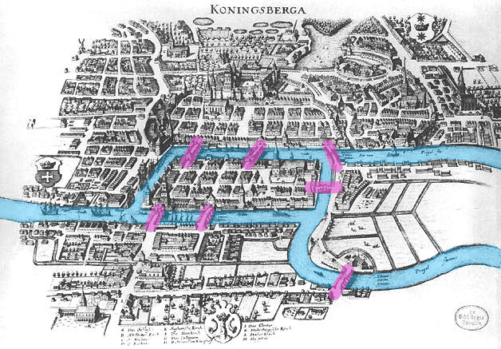

The Problem: The city of Königsberg (now Kaliningrad, Russia) was divided by the Pregel River into four landmasses (islands \(A\) and banks \(B\), \(C\), \(D\)), connected by seven bridges. The challenge was to find a walk through the city that crossed each of the seven bridges exactly once and returned to the starting point.
Euler’s Insight: Euler realized that the shape of the landmasses and the length of the bridges were completely irrelevant to the solution. By representing landmasses as vertices (nodes) and bridges as edges, he simplified the map into a network (graph).
The Solution: Euler proved that a path crossing every edge exactly once (now called an Eulerian Path) is only possible if the number of vertices with an odd number of edges (odd degree) is either \(0\) or \(2\):
In Königsberg, all four landmasses had an odd number of bridges connecting them (degrees 5, 3, 3, and 3).
Therefore, it was mathematically impossible to complete the walk.
The Birth of Topology: By discarding coordinates, distances, and angles, and focusing purely on the connectivity and relationships between points, Euler’s analysis was the very first paper in the history of topology—originally referred to as geometry of position (geometria situs).
2. Major Subfields of Topology#
Modern topology is broadly divided into four major subfields, each focusing on different mathematical tools and structures:
General Topology (Point-Set Topology):
Focus: Studies the foundational definitions of topological spaces, open/closed sets, neighborhoods, continuity, convergence, compactness, and connectedness. It generalizes the concepts of calculus without needing a distance coordinate system.
Data Science Link: Forms the mathematical basis for metric spaces and continuous transformations used in data representation.
Algebraic Topology:
Focus: Uses tools from abstract algebra (such as groups, rings, and homology) to analyze and classify topological spaces. It measures the “shapes” and counts the number of holes of different dimensions in a space.
Data Science Link: Directly powers Topological Data Analysis (TDA) and Persistent Homology (using Betti numbers to identify true data patterns vs. noise).
Differential Topology:
Focus: Studies differentiable (smooth) manifolds and differentiable functions. It deals with smooth structures, tangent vectors, and vector fields on manifolds without relying on metric distances.
Data Science Link: Essential for manifold optimization, gradient descent on Riemannian manifolds, and deep learning architectures like Spherical CNNs.
Geometric Topology:
Focus: Studies manifolds and their embeddings in other manifolds, with a strong focus on low-dimensional spaces (dimensions 2, 3, and 4), orientability, and knot theory.
Data Science Link: Explains complex, non-orientable surfaces (like the Möbius strip and Klein bottle) which serve as testing grounds for non-linear dimensionality reduction methods (like UMAP and Isomap).
Topological Spaces & Metric Spaces#
This section covers the mathematical formulations of Point-Set Topology, defining how spaces are constructed, how limits and closeness are generalized, and how structure-preserving maps are defined.
1. What is a Topological Space?#
Formally, a topological space is defined as a pair (X, τ), where X is a set and τ is a collection of subsets of X (called the topology on X) that satisfies the following three axioms:
Trivial Sets: Both the empty set (\(\emptyset\)) and the set X itself must belong to τ:
Arbitrary Unions: The union of any collection of sets in τ must also belong to τ:
Finite Intersections: The intersection of any finite collection of sets in τ must also belong to τ:
The subsets inside τ are called the open sets of the space X. By abstractly defining which sets are “open”, a topology defines the local structure of the space (such as neighborhoods, limits, and convergence) without needing coordinates or distance measurements.
2. Metric Spaces: A Concrete Example#
A metric space is a specific type of topological space where open sets are defined using a distance function (metric).
A metric space is a set \(X\) equipped with a metric \(d: X \times X \to \mathbb{R}\) that satisfies four axioms for all points \(x, y, z \in X\):
Non-negativity: \(d(x, y) \ge 0\)
Identity of Indiscernibles: \(d(x, y) = 0 \iff x = y\)
Symmetry: \(d(x, y) = d(y, x)\)
Triangle Inequality: \(d(x, z) \le d(x, y) + d(y, z)\)
In a metric space, we define an open ball of radius \(r > 0\) centered at \(x\) as:
A set \(U \subseteq X\) is then defined as open if every point \(x \in U\) is the center of some open ball completely contained inside \(U\). The collection of all such open sets forms a valid topology \(\tau\) on \(X\).
Common metrics in Data Science include:
Euclidean Distance (\(L_2\)): \(d(x, y) = \sqrt{\sum (x_i - y_i)^2}\)
Manhattan Distance (\(L_1\)): \(d(x, y) = \sum |x_i - y_i|\)
Cosine Distance: \(d(x, y) = 1 - \frac{x \cdot y}{\|x\| \|y\|}\)
3. Continuous Functions and Homeomorphisms#
In topology, the equivalent of a structure-preserving map between two spaces is a continuous function:
Continuous Function: A function \(f: X \to Y\) between two topological spaces is continuous if the preimage of every open set in \(Y\) is an open set in \(X\):
Homeomorphism: A homeomorphism (or topological isomorphism) is a bijective function \(f: X \to Y\) such that both \(f\) and its inverse \(f^{-1}\) are continuous.
If a homeomorphism exists between \(X\) and \(Y\), the two spaces are said to be homeomorphic (topologically equivalent). They share all topological properties, meaning one can be continuously morphed into the other without tearing, cutting, or gluing (e.g., a donut morphing into a coffee cup).
4. Compactness and Connectedness#
Using open sets, we can define two fundamental topological properties used in optimization and machine learning:
Compactness: A space is compact if every open cover has a finite subcover (in \(\mathbb{R}^n\), this means the set is closed and bounded). Compactness guarantees that continuous functions reach their minimum and maximum values—a crucial property for optimization algorithms.
Connectedness: A space is connected if it cannot be partitioned into two disjoint open sets. Connectedness forms the mathematical backbone of clustering algorithms (e.g., Single Linkage Hierarchical Clustering).
5. Simplicial Homology#
To formally count the number of holes (Betti numbers) in a geometric space, we use the algebraic tools of Simplicial Homology. Homology groups translate geometric connectivity into the language of vector spaces and linear algebra.
A. Chains and Chain Groups (\(C_k\))#
Let \(K\) be a simplicial complex. A \(k\)-chain is a formal linear combination of \(k\)-simplices in \(K\). In computational topology, we typically use coefficients in the field of integers modulo 2 (\(\mathbb{Z}_2 = \{0, 1\}\)), where addition is equivalent to the exclusive-OR (XOR) operation.
A \(k\)-chain \(c\) is written as:
The set of all \(k\)-chains forms a vector space (or abelian group) called the \(k\)-th Chain Group, denoted as \(C_k(K)\).
B. The Boundary Operator (\(\partial_k\))#
The boundary operator is a linear transformation \(\partial_k: C_k(K) \to C_{k-1}(K)\) that maps a \(k\)-simplex to its boundary faces.
For an oriented \(k\)-simplex spanned by vertices \((v_0, v_1, \dots, v_k)\), the boundary operator is defined as:
where \(\hat{v}_j\) indicates that the vertex \(v_j\) is omitted. With \(\mathbb{Z}_2\) coefficients, signs do not matter, simplifying the equation to:
Example: The boundary of a 1-simplex (edge) \(e = (v_0, v_1)\) is \(\partial_1(v_0, v_1) = v_0 + v_1\) (its two endpoint vertices). The boundary of a 2-simplex (triangle) \((v_0, v_1, v_2)\) is \((v_1, v_2) + (v_0, v_2) + (v_0, v_1)\) (its three bounding edges).
C. The Fundamental Lemma: Boundaries Have No Boundary#
A critical property of the boundary operator is that applying it twice in succession always yields zero:
Intuition: The boundary of a triangle consists of three edges forming a closed loop. The boundary of this loop (the endpoints of the edges) cancels out pairwise under \(\mathbb{Z}_2\) addition, resulting in zero.
D. Cycles (\(Z_k\)), Boundaries (\(B_k\)), and Homology Groups (\(H_k\))#
Because the boundary of a boundary is zero, we can define two key subspaces of \(C_k(K)\):
\(k\)-Cycles (\(Z_k(K)\)): The set of all \(k\)-chains with empty boundaries (representing closed loops or shells). This is the kernel of the boundary operator: $\(Z_k(K) = \ker(\partial_k) = \{c \in C_k(K) \mid \partial_k(c) = 0\}\)$
\(k\)-Boundaries (\(B_k(K)\)): The set of all \(k\)-chains that are themselves the boundary of some higher \((k+1)\)-chain. This is the image of the boundary operator: $\(B_k(K) = \text{im}(\partial_{k+1}) = \{\partial_{k+1}(d) \mid d \in C_{k+1}(K)\}\)$
Since \(\partial^2 = 0\), every boundary is automatically a cycle. Therefore, \(B_k(K)\) is a subspace of \(Z_k(K)\):
The \(k\)-th Homology Group \(H_k(K)\) is defined as the quotient space of cycles modulo boundaries:
The dimension of this quotient vector space is the \(k\)-th Betti number, representing the count of independent \(k\)-dimensional holes in the space:
Manifolds & Dimensionality Reduction#
This section explores how manifold theory simplifies high-dimensional data representation, avoids numerical singularities, and enables smooth orientation changes in 3D applications.
1. What is a Manifold?#
Formally, a manifold \(M\) of dimension \(n\) is a topological space that locally resembles Euclidean space \(\mathbb{R}^n\) near each point. That is, every point \(p \in M\) has a neighborhood \(U \subseteq M\) that is homeomorphic to an open ball in \(\mathbb{R}^n\).
Intuition: The Earth is a 2D sphere (manifold) embedded in 3D space, but locally it looks like a flat 2D plane to us because any small patch of the Earth is homeomorphic to a flat disc.

2. The Manifold Hypothesis in Data Science#
Note
The Manifold Hypothesis states that real-world high-dimensional data (such as images, text embeddings, or sensor signals) actually lies on or near a lower-dimensional manifold embedded within the high-dimensional space.
Deep Learning Application: In Deep Learning, a Feedforward Neural Network can be viewed as learning a sequence of homeomorphisms. It continuously deforms the input space (stretching, bending, and folding) so that complex, non-linearly separable data becomes linearly separable at the final layer.
Topological Dimensionality Reduction: UMAP#
While PCA assumes linear relations, algorithms like t-SNE and UMAP (Uniform Manifold Approximation and Projection) preserve local and global topological structures.
UMAP assumes that the data lies on a local Riemannian manifold and uses fuzzy simplicial complexes to represent its topology. It then projects the data into a lower-dimensional space while minimizing the cross-entropy between the topological representations.
3. Real-World Application: 3D Game Engines & Gimbal Lock#
In game development, 3D computer graphics, and aerospace engineering, a famous manifestation of coordinate singularities is Gimbal Lock.
The Problem: Euler Angles and Gimbal Lock#
To represent 3D rotation, the most intuitive method is using Euler Angles (Roll, Pitch, Yaw), which rotates an object sequentially around three orthogonal axes (e.g., first X, then Y, then Z).
Mathematically, Euler angles attempt to map the 3D rotation group (a 3D manifold called \(SO(3)\)) using only three coordinates. Just like mapping the 2D surface of the Earth collapses at the poles, any 3-parameter coordinate system for 3D rotations must contain coordinate singularities.
Warning
Gimbal Lock occurs when the Pitch (rotation around the Y-axis) reaches exactly \(90^\circ\) or \(-90^\circ\). The first and third axes of rotation (Roll and Yaw) align perfectly, collapsing the 3D rotation space locally into 2D. The system loses one degree of freedom and cannot rotate along the lost axis without experiencing unnatural jumps or distortions.

The Solution: Quaternions#
To avoid this singularity, modern game engines (such as Unity, Unreal Engine, and Godot) represent rotations using Quaternions instead of Euler angles.
A quaternion is a 4-dimensional hypercomplex number:
Topological View: The set of unit quaternions forms a 3-dimensional sphere (\(S^3\)) embedded in 4-dimensional space \(\mathbb{R}^4\). The 3-sphere \(S^3\) acts as a double-cover of the 3D rotation group \(SO(3)\).
Singularity-Free: Because quaternions use 4 parameters to describe a 3D manifold, they avoid coordinate singularities entirely. There is no Gimbal Lock.
Smooth Interpolation: Using quaternions, game engines can perform SLERP (Spherical Linear Interpolation). This allows character models, camera rigs, and physics objects to rotate smoothly between any two orientations without visual glitches or acceleration spikes.
import numpy as np
from scipy.spatial.transform import Rotation as R
from scipy.spatial.transform import Slerp
# 1. Define orientation using Euler angles (Roll, Pitch, Yaw)
# Pitch at 90 degrees triggers Gimbal Lock in traditional Euler systems
euler_angles = [0, 90, 0] # Degrees
rotation = R.from_euler('xyz', euler_angles, degrees=True)
# 2. Convert to Quaternion [x, y, z, w] to resolve Gimbal Lock
quaternion = rotation.as_quat()
print(f"Gimbal Lock resolved. Quaternion representation: {quaternion}")
# 3. Perform Smooth Rotation Interpolation (SLERP)
# Define start and end orientations
rot_start = R.from_euler('xyz', [0, 0, 0], degrees=True)
rot_end = R.from_euler('xyz', [90, 45, 90], degrees=True)
# Set up SLERP interpolation
times = [0.0, 1.0]
key_rotations = R.from_quat([rot_start.as_quat(), rot_end.as_quat()])
slerp_operator = Slerp(times, key_rotations)
# Interpolate smoothly at t = 0.5 (halfway orientation)
interpolated_rot = slerp_operator(0.5)
print(f"Smoothly interpolated Quaternion: {interpolated_rot.as_quat()}")
Topological Data Analysis (TDA) & Persistent Homology#
Topological Data Analysis (TDA) treats data points as a cloud from which we want to extract the underlying shape and connectivity.
1. Simplicial Complexes & Nerve Theorem#
To analyze a discrete set of data points topologically, we connect them using simplices (points, lines, triangles, tetrahedrons) to build a continuous geometric structure called a Simplicial Complex:
0-simplex: A point.
1-simplex: A line segment (connecting two points).
2-simplex: A filled triangle (connecting three points).
3-simplex: A solid tetrahedron (connecting four points).
To construct a simplicial complex from a dataset X in a metric space, we grow closed balls of radius \(\epsilon/2\) around each point \(x \in X\), denoted as \(B(x, \epsilon/2)\). There are three primary ways to build these complexes:
A. The Čech Complex (\(\check{C}_\epsilon(X)\))#
A simplex \(\sigma\) belongs to the Čech complex if the balls of radius \(\epsilon/2\) centered at its vertices have a non-empty global intersection:
The Nerve Theorem: The Nerve Theorem states that if the intersection of any subcollection of balls is contractible (which is true for convex balls in Euclidean space), then the Čech complex is homotopy equivalent (shares the same topological shape/holes) to the union of the balls.
Limitation: Finding whether a large set of balls has a common intersection is computationally very expensive for high-dimensional simplices.
B. The Vietoris–Rips Complex (\(VR_\epsilon(X)\))#
A simplex \(\sigma\) belongs to the Vietoris–Rips complex if the balls of radius \(\epsilon/2\) centered at its vertices intersect pairwise (which simply means the distance between any two vertices is \(\le \epsilon\)):
Pros & Cons: It is much easier to compute because we only need to check pairwise distances. However, it does not satisfy the Nerve Theorem and can introduce “ghost” topological features that do not exist in the union of the balls.
Interleaving Relationship: The Čech and Vietoris-Rips complexes approximate each other through the following squeeze/interleaving theorem:
C. The Alpha Complex (\(\alpha\)-complex)#
The Alpha complex is a subcomplex of the Delaunay triangulation. It restricts the balls \(B(x, \epsilon/2)\) to their respective Voronoi cells (the region of space closer to \(x\) than to any other point).
By intersecting each ball with its Voronoi cell, we get a much smaller simplicial complex that is still homotopy equivalent to the union of the balls (satisfying the Nerve Theorem) but is computationally much faster to construct in low dimensions.
2. Betti Numbers#
Betti numbers (\(\beta_k\)) are topological invariants that count the number of \(k\)-dimensional holes in a simplicial complex:
\(\beta_0\): The number of connected components.
\(\beta_1\): The number of 1D circular holes (like a loop or a circle).
\(\beta_2\): The number of 2D voids (like the empty space inside a hollow sphere or balloon).
3. Persistent Homology#
Instead of choosing a single radius \(\epsilon\), Persistent Homology computes the simplicial complexes for all values of \(\epsilon\) from \(0\) to \(\infty\). As \(\epsilon\) grows:
New simplices are born (connecting components).
New holes are born.
Existing holes are filled in and “die.”
We track the birth and death of topological features across different scales of \(\epsilon\) using:
Persistence Barcodes: Horizontal lines showing the lifespan of each hole (x-axis is \(\epsilon\)).
Persistence Diagrams: 2D scatter plots where the x-axis is the birth scale and the y-axis is the death scale.

Long-lived features (bars that persist over a wide range of \(\epsilon\)) represent true topological structures of the data, while short-lived features represent noise.
A. Algebraic Foundations: Persistence Modules#
In mathematical TDA, a filtration of simplicial complexes yields a sequence of vector spaces connected by linear maps. This algebraic object is called a Persistence Module:
A persistence module \(V\) over \(\mathbb{R}\) (or \(\mathbb{Z}\)) is a collection of vector spaces \(\{V_t\}_{t \in \mathbb{R}}\) together with linear maps \(v_{s,t}: V_s \to V_t\) for all \(s \le t\), satisfying:
Identity: \(v_{t,t} = \text{id}_{V_t}\) for all \(t\).
Composition: \(v_{t,r} \circ v_{s,t} = v_{s,r}\) for all \(s \le t \le r\).
The Structure Theorem: If a persistence module is pointwise finite-dimensional (each \(V_t\) is finite-dimensional), it decomposes uniquely into a direct sum of interval modules \(I[b, d]\):
where an interval module \(I[b, d]\) represents a topological feature that is born at scale \(b\) and dies at scale \(d\). This algebraic decomposition is what justifies representing persistent homology as a barcode or persistence diagram.
B. The Persistence Algorithm & Matrix Reduction#
To compute persistent homology, we represent the boundary operators across all simplices in a single boundary matrix \(D\).
Let \(m\) be the total number of simplices in the filtration, sorted such that if simplex \(\sigma_i\) is a face of \(\sigma_j\), then \(i < j\). The boundary matrix \(D\) is an \(m \times m\) matrix where:
\(D[i, j] = 1\) if simplex \(\sigma_i\) is a codimensional-1 face of simplex \(\sigma_j\) (using \(\mathbb{Z}_2\) coefficients).
\(D[i, j] = 0\) otherwise.
Column Reduction Algorithm#
We reduce \(D\) to a column-echelon form \(R\) using column operations. For any column \(j\), let \(\text{low}(j)\) denote the index of the lowest row containing a \(1\). The algorithm is:
for j = 1 to m:
while there exists column k < j such that low(k) == low(j):
add column k to column j (modulo 2)
Pivots & Birth-Death Pairs: Once reduced, if \(\text{low}(j) = i\), it means the simplex \(\sigma_i\) gave birth to a topological hole, and simplex \(\sigma_j\) killed it. This gives a birth-death interval \([t_i, t_j]\) in the barcode. If column \(j\) is reduced to zero and is never a pivot, it represents a feature that never dies (its interval is \([t_j, \infty)\)).
The Clearing Optimization: To speed up computation, if a column \(i\) is identified as a lowest row index (\(\text{low}(j) = i\)), we immediately clear column \(i\) to zero (\(R[:, i] = 0\)). This is because any simplex that acts as a killer (boundary generator) cannot also give birth to a cycle in the same dimension, saving significant computation time.
C. Stability & The Isometry Theorem#
To guarantee that TDA is a reliable tool, we must be able to compare persistence modules and prove that they are robust to noise.
Interleaving Distance (\(d_I\)): Two persistence diagrams are compared by finding an algebraic alignment between their underlying persistence modules. We say two modules \(V\) and \(W\) are \(\delta\)-interleaved if there exist families of linear maps \(f_t: V_t \to W_{t+\delta}\) and \(g_t: W_t \to V_{t+\delta}\) that commute with the transition maps. The interleaving distance \(d_I(V, W)\) is the infimum of all such \(\delta\) for which an interleaving exists.
The Isometry Theorem: The Isometry Theorem (proven by Bjerkevik and others) states that the algebraic interleaving distance between two persistence modules is exactly equal to the geometric bottleneck distance between their persistence diagrams:
The Stability Inequality: This isometry underpins the stability of persistent homology. For any two continuous functions \(f, g\) on a space \(X\), the bottleneck distance between their respective persistence diagrams is bounded by their supremum distance:
D. Persistent Cohomology#
Cohomology is the algebraic dual of homology. Instead of study chains (sums of simplices), cohomology studies cochains (functions mapping simplices to coefficients, \(C^k(K) = \text{Hom}(C_k(K), \mathbb{Z}_2)\)), using the coboundary operator \(d_k: C^k(K) \to C^{k+1}(K)\).
Computational Advantage: While persistent homology and persistent cohomology yield the exact same barcodes (due to dualities on field coefficients), the persistent cohomology algorithm is mathematically dual and runs significantly faster.
Why it is faster: In cohomology, we build the filtration from the top down. The boundary matrix column reduction can be performed on the fly with much smaller active matrix sizes. This is why state-of-the-art TDA software (such as Ripser and GUDHI) defaults to computing persistent cohomology.
4. Python Example: Calculating Betti Numbers with GUDHI#
You can perform Topological Data Analysis in Python using the gudhi library:
# To run this example, install gudhi: pip install gudhi
import numpy as np
import gudhi as gd
# Generate points on a circle with some noise
theta = np.linspace(0, 2 * np.pi, 100)
x = np.cos(theta) + np.random.normal(0, 0.05, 100)
y = np.sin(theta) + np.random.normal(0, 0.05, 100)
points = np.vstack((x, y)).T
# Compute Vietoris-Rips complex
rip_complex = gd.RipsComplex(points=points, max_edge_length=2.0)
simplex_tree = rip_complex.create_simplex_tree(max_dimension=2)
# Compute persistence
persistence = simplex_tree.persistence()
# Print topological features: dimension, (birth, death)
for feature in persistence:
dim, (birth, death) = feature
# We look for features that persist (have a large lifespan)
if (death - birth) > 0.5:
print(f"Dimension {dim} hole born at {birth:.3f}, dies at {death:.3f} (Lifespan: {death - birth:.3f})")
Expected Output:
Dimension 0 hole born at 0.000, dies at inf (Lifespan: inf)
Dimension 1 hole born at 0.120, dies at 1.450 (Lifespan: 1.330)
The infinite dimension 0 hole shows that all points eventually merge into a single connected component.
The dimension 1 hole (large lifespan) indicates the loop structure of the circle we generated.
Advanced Topological Algorithms#
This section introduces advanced computational topology algorithms used in visualization, dynamic systems, and multi-scale data analysis.
1. Reeb Graphs & The Mapper Algorithm#
Reeb Graphs#
A Reeb graph is a topological structure that captures the shape of a mathematical space by tracking how its connected components merge and split along a continuous function.
Formally, given a topological space \(X\) and a continuous function \(f: X \to \mathbb{R}\), the Reeb graph is the quotient space of \(X\) under the equivalence relation:
The Mapper Algorithm#
The Mapper algorithm is a discretization of the Reeb graph concept. It is one of the most popular tools in Topological Data Analysis for visualizing the shape of high-dimensional datasets.
The Mapper pipeline operates as follows:
[1. Input Data Point Cloud (X)]
│
▼
[2. Apply Filter Function f(X)]
│
▼
[3. Divide Range into Overlapping Bins]
│
▼
[4. Cluster Points inside each Bin]
│
▼
[5. Draw Edges between Overlapping Clusters]
│
▼
[6. Output Topological Network Graph]
Filter Function (Lens): We map the high-dimensional data points \(X\) to a lower-dimensional space (typically 1D or 2D) using a filter function \(f: X \to \mathbb{R}\) (such as density estimates, PCA components, or geodesic distance).
Overlapping Bins: We divide the range of \(f(X)\) into a set of overlapping intervals (bins).
Clustering: For each bin, we look at the original data points that fell into it and apply a clustering algorithm (such as DBSCAN or hierarchical clustering) to find connected components.
Graph Construction:
Each cluster acts as a vertex (node) in our output graph.
We draw an edge between two nodes if their respective clusters share one or more common data points (which occurs because the bins overlap).
Data Science Application: Mapper represents complex, high-dimensional datasets as a simple, interactive network of nodes and edges, revealing branches, loops, and clusters that traditional dimensionality reduction methods might hide.
2. Zigzag Persistent Homology#
Standard persistent homology assumes a nested, growing sequence of simplicial complexes (a filtration):
In this monotonic setup, all maps go in one direction. Zigzag Persistent Homology generalizes this by allowing the simplicial complexes to grow and shrink. The sequence of maps can point in either direction:
Why it is useful: In dynamic systems, we often study time-varying datasets (such as moving particle clouds or video frames). Points are continuously added and deleted. Zigzag persistence allows us to track topological features (like loops or voids) as they appear, deform, and disappear over time, without requiring the spaces to be nested.
3. Multiparameter Persistent Homology#
Standard TDA grows spheres of a single radius \(\epsilon\). However, real-world data is often noisy and contaminated with outliers. A single filtration parameter cannot separate true structure from noise.
Multiparameter (or multidimensional) persistence indexes simplicial complexes by two or more parameters simultaneously:
Parameter 1: Sphere radius \(\epsilon\) (representing scale).
Parameter 2: Density threshold \(\rho\) (representing density).
By filtering by both scale and density, we can filter out low-density outliers while analyzing the shape of the dense core of the dataset.
The Algebraic Challenge#
Unlike 1D persistent homology, the algebraic structure of multiparameter modules is extremely complex:
Warning
No Unique Interval Decomposition: In 1D, the Structure Theorem guarantees that every persistence module decomposes uniquely into interval modules (barcodes). In 2D or higher, no such unique decomposition exists. This means we cannot represent multidimensional persistence as a single, simple barcode.
Computational Solutions#
To analyze multiparameter persistence, researchers use:
Fibered Barcodes: We project the 2D parameter space onto various 1D lines and compute the standard 1D barcodes along those lines.
Rank Invariants: We compute the Betti numbers between pairs of coordinates in the multi-parameter grid.
RIVET (Rank Invariant Visualization and Exploration Tool): A software package specifically designed to calculate and visualize these rank invariants for 2D persistence modules.
Topological Surfaces & Singularities#
This section covers special non-orientable topological surfaces, polar singularities, and vector field singularities on spheres.
1. Special Topological Surfaces#
The Möbius Strip#
The Möbius strip is a two-dimensional surface with only one side and one boundary curve.
You can easily construct a physical model of a Möbius strip by taking a rectangular strip of paper, giving one end a half-twist (\(180^\circ\) turn), and then gluing the two ends together.
{kind=link}
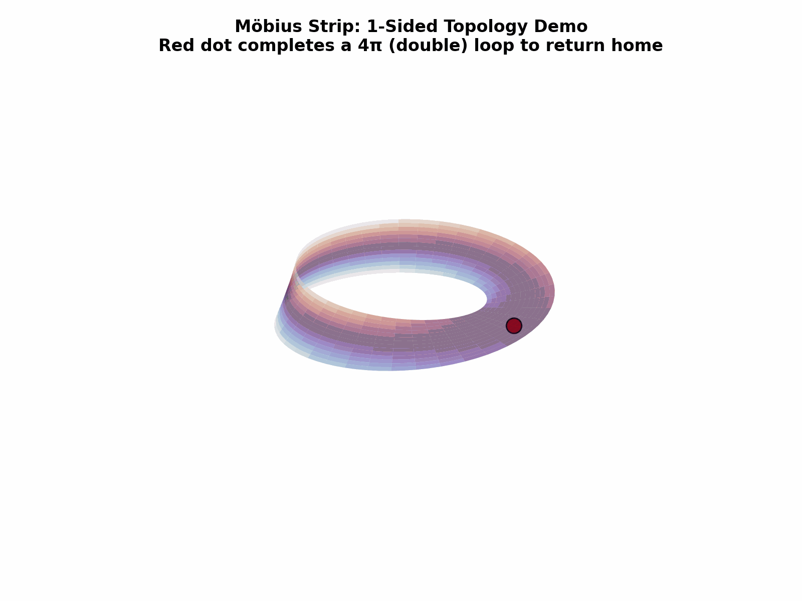
One-sided Property: If you start drawing a line down the middle of a Möbius strip with a pen, you will eventually cover both “sides” of the paper and return to your starting point without ever lifting your pen or crossing the boundary edge.
Topological Significance: It is the simplest non-orientable surface. In data science, the Möbius strip is used to model cyclical datasets that have a twist or reflection in their state space.
The Klein Bottle#
The Klein bottle is a closed 2D manifold (surface) that takes the concept of the Möbius strip one step further. It has no boundaries (like a sphere) but possesses only one side (like a Möbius strip).
{kind=link}
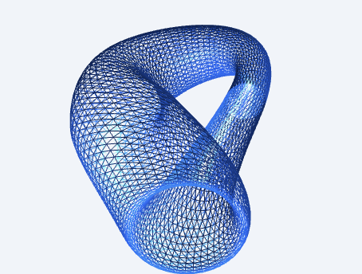
Topological Connection to the Möbius Strip: A Klein bottle can be mathematically constructed by gluing two Möbius strips together along their circular boundaries. Since a Möbius strip only has a single boundary edge (which is topologically a circle \(S^1\)), joining two Möbius strips along this single edge closes the surface, yielding a Klein bottle.
Dimensionality Embedding & Figure-8 Immersion: A Klein bottle cannot be embedded in 3D space without passing through itself. However, it can be embedded perfectly in 4D space (\(d = 4\)) without self-intersection.
The illustration above shows the Figure-8 immersion (often called the Klein Bagel) in 3D:
It is represented as a clean blue wireframe mesh on a light background.
In 4D space, the self-intersection is resolved because the intersecting parts have different values in the fourth dimension (\(w\)-axis).
Data Science Application: Non-orientable manifolds like the Klein bottle are used as challenging benchmark datasets in manifold learning. They test whether non-linear dimensionality reduction algorithms (like UMAP or Isomap) can map high-dimensional topological structures into lower dimensions without losing essential topological characteristics.
2. Singularities on a Sphere#
A singularity is a point where a mathematical object loses its normal properties, collapses in dimension, or becomes mathematically undefined. Singularities on a sphere are studied in two major topological contexts:
A. Topological Vector Field Singularities: The Hairy Ball & Poincaré-Hopf Theorems#
Important
The Hairy Ball Theorem from algebraic topology states that there is no continuous, non-vanishing tangent vector field on even-dimensional spheres (such as a 2D sphere \(S^2\)).
Intuition: “You cannot comb a hairy ball flat without creating at least one cowlick (singularity/whorl).”
{kind=link}
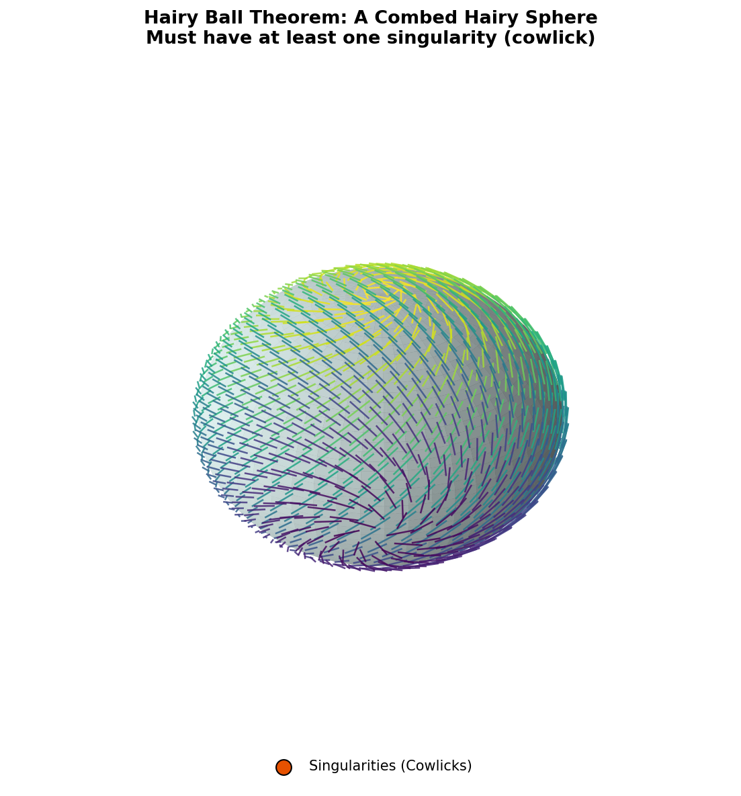
This theorem is a direct consequence of a much deeper topological principle: the Poincaré-Hopf Theorem.
Understanding the Poincaré-Hopf Theorem#
The Poincaré-Hopf Theorem links the local behavior of a vector field (such as wind) to the global topology of the surface it lies on. It states that for any smooth vector field on a compact manifold \(M\) with isolated zeroes (singularities), the sum of the indices of these zeroes equals the Euler characteristic (\(\chi(M)\)) of the manifold:
What is the “Index” of a Singularity?#
The index measures how the vectors rotate as you walk counter-clockwise in a small loop around the singularity:
Source / Outflow (Wind blowing outward in all directions): Index = +1
Sink / Inflow (Wind blowing inward in all directions): Index = +1
Vortex / Whorl (Wind spiraling or rotating around a center): Index = +1
Saddle Point / Col (Wind coming in from two directions and leaving in two other directions): Index = -1
Meteorological Application: Wind Systems on Earth#
The Earth’s surface is topologically a 2-sphere (\(S^2\)), which has an Euler characteristic of \(\chi(S^2) = 2\). Applying the Poincaré-Hopf Theorem to the Earth’s wind vector field:
This leads to several fascinating meteorological rules:
At least one calm spot: It is mathematically impossible to have a continuous wind blowing everywhere on Earth without any calm spots (points of zero wind speed). There must always be at least one cyclone, anticyclone, or saddle point.
The Balance of Weather Systems:
If the Earth only has standard swirling systems (cyclones and anticyclones, which have an index of +1), there must be exactly two of them on the entire globe (e.g., 1 + 1 = 2, representing 1 Cyclone + 1 Anticyclone).
If a weather map features multiple storm centers (cyclones) and high-pressure centers (anticyclones), they must be balanced by saddle points (cols) (index of -1). For instance, if there are 3 cyclones/anticyclones (total index of +3), there must be exactly 1 saddle point (index of -1) to keep the global sum equal to 2: (+1) + (+1) + (+1) + (-1) = 2
Meteorologists use this topological constraint to validate global wind simulations and ensure that pressure systems and calm spots mapped by forecast models are topologically consistent.
B. Coordinate Singularities (Poles)#
When mapping a 2D sphere using spherical coordinates (latitude \(\phi\) and longitude \(\theta\)), the North Pole and South Pole become coordinate singularities:
Longitude \(\theta\) is completely undefined at the poles (all longitude lines converge to a single point).
The Jacobian matrix of coordinate transformations collapses (loses rank) at the poles.
Data Science & ML Relevance: In global climate forecasting, geographical information systems (GIS), and deep learning on spherical grids (e.g., Spherical CNNs), polar singularities cause mathematical distortions and numerical instability during grid-based operations. To resolve this, researchers use grid-free spherical representations (such as Healpix grids) or project spherical coordinates into Cartesian 3D space \((x, y, z)\) to eliminate the singularities.
Interdisciplinary Applications of Topology#
Topology is not just an abstract branch of pure mathematics; it has direct, high-impact applications across a wide variety of scientific and engineering fields.
1. Robotics & Motion Planning (Configuration Spaces)#
In robotics, the set of all possible positions and orientations a robot can take is represented as a high-dimensional manifold called the Configuration Space (C-space):
{kind=link}
The Torus Mapping: As shown above, for a simple 2-joint robotic arm, each joint angle (\(\theta_1, \theta_2\)) ranges from \(0\) to \(2\pi\) (which topologically represents a circle \(S^1\)). The total configuration space is the product of these two circles (\(S^1 \times S^1\)), which is topologically a Torus (donut manifold).
Path Planning: Finding a collision-free motion for the robot joint movements corresponds to finding a smooth, continuous path on this torus manifold from a start coordinate to an end coordinate while avoiding obstacles (which are represented as “holes” or cutouts on the manifold).
2. Wireless Sensor Networks & Relative Homology#
In wireless network engineering and spatial monitoring, a critical problem is Coverage Verification: determining if a collection of sensors with overlapping coverage discs completely covers a given domain without leaving any “blind spots” (holes).
Using coordinates or geometric maps to verify coverage is highly susceptible to measurement noise and GPS errors. Topology provides a coordinate-free, coordinate-robust solution using Relative Homology.
Relative Homology (\(H_k(X, A)\)): Given a topological space \(X\) and a subspace \(A \subseteq X\), relative homology group \(H_k(X, A)\) counts the number of \(k\)-dimensional holes in \(X\) that are not contained within \(A\). In essence, it treats the entire subspace \(A\) as a single, connected component, modding out any cycles that lie entirely within \(A\).
The de Silva–Ghrist Theorem: Let \(D \subseteq \mathbb{R}^2\) be a bounded target domain monitored by sensors. We represent the sensors as a set of nodes \(X\) and construct a Vietoris-Rips complex \(R(X)\) based on their communication range. Let \(R_{\partial}\) be the subcomplex representing sensors near the boundary of the domain.
De Silva and Ghrist proved that if the relative homology mapping is non-trivial: $\(H_2(R(X), R_{\partial}) \neq 0\)$
then it mathematically guarantees that the union of the sensors’ coverage regions completely covers the domain \(D\), leaving no blind spots. This verification requires no coordinate coordinates, only the network’s connectivity data!
3. Physics & Materials Science#
Topology has revolutionized modern physics, leading to multiple Nobel prizes:
Topological Insulators & Condensed Matter: Topological materials possess electronic states that are protected by topology. For example, in 2D topological insulators, electrical current flows only along the edges of the material and is completely protected from backscattering (impurities in the crystal). David Thouless, Duncan Haldane, and Michael Kosterlitz were awarded the 2016 Nobel Prize in Physics for discovering these topological phases of matter.
String Theory & Calabi-Yau Manifolds: In string theory, the universe is modeled with 10 dimensions, where the 6 extra dimensions are curled up into tiny, complex 6D manifolds called Calabi-Yau manifolds. The topological classification of these manifolds dictates the physical properties and families of particles that can exist in the universe.
Cosmology: Physical cosmologists use topology to describe the global, overall shape of the universe (spacetime topology), trying to determine if our universe is flat, spherical, or toroidal.
4. Molecular Biology & Nanotechnology#
Biological systems utilize topological constraints to manage complex, folded structures:
DNA Knotting: Inside a cell, DNA is a long, highly coiled molecule. Enzymes (like topoisomerases) manage DNA replication by cutting, twisting, and reconnecting DNA strands—essentially performing topological transformations to resolve knots and tangles. Biologists use Knot Theory to classify these knots and study how they affect DNA electrophoresis speeds.
Protein Folding: The complex 3D structures of folded proteins are classified using Circuit Topology and Knot Theory, comparing pairwise arrangements of internal contacts and chain crossings to understand protein stability and functions.
5. Computer Science & Program Semantics#
Beyond data analysis (TDA), topology is used to formalize programming logic:
Domain Theory: Programming language semantics are formalized using topological spaces. Computer scientists like Steve Vickers characterize topological open sets as semidecidable (finitely observable) properties of computer programs—representing properties that a program can verify in finite time.
6. Fiber Arts & Puzzles#
Modular Fiber Arts: In crochet or modular knitting, creating a continuous, seamless join of multiple pieces without breaking the yarn is an application of finding an Eulerian Path (traversing each edge of the modular mesh exactly once).
Disentanglement Puzzles: Classic metal and string puzzles rely on topological features (like genus, loops, and boundary crossings) to be solved, where the solution is found by finding a topological deformation that allows two linked components to slide past each other.
Approximation Theory#
In computational mathematics and data science, many functions (like \(e^x\), \(\ln(x)\), \(\sin(x)\), or complex neural network mappings) cannot be calculated exactly. Instead, computers calculate highly accurate approximations.
Here we cover the core methods of function approximation used in numerical computing, calculators, and machine learning.
1. Taylor Series & Maclaurin Series#
A Taylor Series represents a smooth function as an infinite sum of terms calculated from the values of the function’s derivatives at a single point \(a\).
For a function \(f(x)\), the Taylor expansion is:
When we center the approximation at \(a = 0\), it is called a Maclaurin Series:
Common Maclaurin Series:#
Exponential: \(e^x = 1 + x + \frac{x^2}{2!} + \frac{x^3}{3!} + \dots\)
Sine: \(\sin(x) = x - \frac{x^3}{3!} + \frac{x^5}{5!} - \dots\)
Cosine: \(\cos(x) = 1 - \frac{x^2}{2!} + \frac{x^4}{4!} - \dots\)
Python Implementation (Taylor Approximation)#
Let’s approximate \(e^x\) using SymPy:
import sympy as sp
x = sp.symbols('x')
f = sp.exp(x)
# Taylor expansion centered at 0 (Maclaurin) of degree 4
taylor_poly = f.series(x, 0, 5).removeO()
print("Taylor polynomial of e^x (degree 4):")
sp.pprint(taylor_poly)
2. Chebyshev Polynomials (Minimax Approximation)#
Taylor series are extremely accurate near the expansion point \(a\), but the approximation error grows rapidly as you move away from \(a\).
To achieve a uniform error over an entire interval \([a, b]\), we use Chebyshev Polynomials. They minimize the maximum error (the “minimax” property) over the interval \([-1, 1]\).
The Chebyshev polynomials of the first kind are defined by the recurrence relation:
For example, \(T_2(x) = 2x^2 - 1\), \(T_3(x) = 4x^3 - 3x\), etc.
These polynomials are the foundation of numerical libraries in calculators and coding environments (like NumPy’s numpy.polynomial.chebyshev) to calculate trigonometric and exponential functions efficiently.
3. Exponential & Logarithmic Approximations#
In machine learning and statistics, we often approximate exponentiation and logarithms to speed up calculations or prevent numerical overflow/underflow (e.g., in Softmax or Log-Loss).
For instance, when \(x\) is very small, we can approximate \(\ln(1+x)\) using the first term of its Taylor series:
Similarly: $\(e^x \approx 1 + x \quad (\text{for } x \approx 0)\)$
Python Example (Log Approximation)#
import numpy as np
x = 0.05
approx = x
actual = np.log(1 + x)
print(f"Approximation of ln(1 + {x}) : {approx}")
print(f"Actual value : {actual:.6f}")
print(f"Absolute Error : {abs(approx - actual):.6f}")
4. Remez’s Algorithm#
Remez’s Algorithm is an iterative minimax approximation algorithm. It finds the polynomial of a given degree \(n\) that minimizes the maximum absolute error for a continuous function \(f(x)\) on an interval \([a, b]\).
Unlike Taylor series which focus on a single point, Remez’s algorithm produces an approximation where the error oscillates between positive and negative bounds of equal magnitude (equioscillation theorem).
5. The Universal Approximation Theorem (UAT)#
In deep learning, neural networks are fundamentally universal function approximators.
The Universal Approximation Theorem states that a standard feedforward neural network with:
A single hidden layer
A finite number of neurons
A non-linear activation function (such as ReLU, Sigmoid, or Tanh)
can approximate any continuous function on a compact subset of \(\mathbb{R}^n\) to any desired degree of accuracy.
This theorem provides the mathematical justification for why deep learning models are capable of learning extremely complex mappings (images to labels, text to text) from data.
Exercises#
Exercise 1
Find the Taylor polynomial of degree 3 for the function \(f(x) = \ln(1+x)\) centered at \(x=0\).
Exercise 2
Using the Chebyshev recurrence relation \(T_{n+1}(x) = 2x T_n(x) - T_{n-1}(x)\), derive the formula for \(T_4(x)\) given:
\(T_2(x) = 2x^2 - 1\)
\(T_3(x) = 4x^3 - 3x\)
Solution — Exercise 1
Compute the derivatives of \(f(x) = \ln(1+x)\) at \(x=0\):
\(f(0) = \ln(1) = 0\)
\(f'(x) = \frac{1}{1+x} \implies f'(0) = 1\)
\(f''(x) = -\frac{1}{(1+x)^2} \implies f''(0) = -1\)
\(f'''(x) = \frac{2}{(1+x)^3} \implies f'''(0) = 2\)
Substitute into the Taylor formula: $\(f(x) \approx 0 + 1(x) + \frac{-1}{2!}x^2 + \frac{2}{3!}x^3 = x - \frac{x^2}{2} + \frac{x^3}{3}\)$
Solution — Exercise 2
Using the recurrence relation for \(n=3\): $\(T_4(x) = 2x T_3(x) - T_2(x)\)\( \)\(T_4(x) = 2x(4x^3 - 3x) - (2x^2 - 1)\)\( \)\(T_4(x) = 8x^4 - 6x^2 - 2x^2 + 1\)\( \)\(T_4(x) = 8x^4 - 8x^2 + 1\)$
Approximation and Fitting#
In data science, we often approximate complex data points or functions using mathematical models. This page covers norm approximation, regularization, robust approximation, and function fitting based on Chapter 6 of Stephen Boyd’s Convex Optimization.
1. Norm Approximation#
The simplest norm approximation problem has the form:
Where \(A \in \mathbb{R}^{m \times n}\) (\(m > n\)) and \(\|\cdot\|\) is any norm (such as \(L_1\), \(L_2\), or \(L_\infty\)).
\(L_2\) Norm (Least-squares): Minimizes the sum of squared residuals (\(\sum r_i^2\)). It is highly sensitive to outliers.
\(L_1\) Norm (Robust approximation): Minimizes the sum of absolute residuals (\(\sum |r_i|\)). It is more robust to outliers and leads to sparse residuals.
\(L_\infty\) Norm (Chebyshev approximation): Minimizes the maximum absolute residual (\(\max |r_i|\)).
2. Least-Norm Problems#
When a system of linear equations \(Ax = b\) is underdetermined (\(m < n\), meaning there are more variables than equations), we want to find the solution that has the smallest norm:
For the \(L_2\) norm, the analytical solution is \(x = A^T(A A^T)^{-1} b\).
3. Regularized Approximation#
To balance the trade-off between fitting the data well (minimizing \(\|Ax - b\|\)) and keeping the model weights small (minimizing \(\|x\|\)), we use regularization:
Where \(\gamma > 0\) is the regularization parameter.
Tikhonov Regularization (\(L_2\) / Ridge): Minimizes \(\|Ax - b\|_2^2 + \gamma \|x\|_2^2\). It prevents overfitting by shrinking coefficients.
Lasso Regularization (\(L_1\)): Minimizes \(\|Ax - b\|_2^2 + \gamma \|x\|_1\). It performs feature selection by driving some coefficients to exactly zero.
4. Robust Approximation#
When there is uncertainty or noise in the matrix \(A\), we use robust approximation to optimize for the worst-case scenario:
Where \(\mathcal{U}\) represents the set of possible perturbations. This ensures the model remains stable even under input perturbations.
5. Function Fitting & Interpolation#
We want to fit a continuous function \(f(x)\) using a linear combination of basis functions \(\phi_i(x)\):
Common Basis Functions:#
Polynomial Fitting: \(\phi_i(x) = x^i\)
Spline Interpolation: Piecewise polynomials connected smoothly at knots.
Python Example: Polynomial Fitting (L2 vs. L1 Robust Fitting)#
import numpy as np
import matplotlib.pyplot as plt
from scipy.optimize import minimize
# Generate data with an outlier
np.random.seed(42)
x = np.linspace(-3, 3, 20)
y = 2 * x + 1 + np.random.normal(0, 0.5, 20)
y[15] += 10 # Introduce a massive outlier
# L2 Loss (Least-squares)
def l2_loss(coeffs):
return np.sum((y - (coeffs[0] * x + coeffs[1]))**2)
# L1 Loss (Robust absolute loss)
def l1_loss(coeffs):
return np.sum(np.abs(y - (coeffs[0] * x + coeffs[1])))
c_l2 = minimize(l2_loss, [0.0, 0.0]).x
c_l1 = minimize(l1_loss, [0.0, 0.0]).x
print("L2 Coefficients (Slope, Intercept):", c_l2)
print("L1 Coefficients (Slope, Intercept):", c_l1)
Exercises#
Exercise 1
Explain why Lasso (\(L_1\) regularization) produces sparse solutions (weights set to 0) while Ridge (\(L_2\) regularization) does not.
Solution — Exercise 1
The constraint region for \(L_1\) regularization is a diamond shape (with sharp corners on the axes), whereas the constraint region for \(L_2\) regularization is a circle. When optimizing, the contours of the loss function are highly likely to hit the sharp corners of the \(L_1\) diamond first (which lie exactly on the axes, meaning some variables are set to 0). For the \(L_2\) circle, the contact point can be anywhere, resulting in small but non-zero weights.
Machine learning#
Preface#
Documentation on all topics that I learn on both Artificial intelligence and machine learning. Topics Covered:
Artificial Intelligence Concepts
Search
Decision Theory
Reinforcement Learning
Artificial Neural Networks
Back-propagation
Feature Extraction
Deep Learning
Convolutional Neural Networks
Deep Reinforcement Learning
Distributed Learning
Python/Matlab deep learning library
Methodology for usage#
This chapter will give a recipe on how to tackle Machine learning problems
3 Step process#
Define what you need to do and how to measure(metrics) how well/bad you are going.
Start with a very simple model (Few layers)
Add more complexity when needed.
Define goals#
Normally by being slightly better than human performance(in terms of accuracy or prediction time), is already enough for a good product.
Metrics#
Accuracy: % of correct examples Coverage: Number of processed examples per unit of time Precision: Number of detections that are correct Error: Amount of error
Start with simplest model#
Look if available for the state-of-the-art method for solving that problem. If not available use the following recipe. 1. Lots of noise and now much structure(ex: House price from features like number of rooms,kitchen size, etc…): Don’t use deep learning 2. Few noise but lot’s of structure (ex: Images, video, text): Use deep learning
Examples for Non-deep methods:#
Logistic Regression SVM Boosted decision trees (Previous favorite “default” algorithm), used a lot in robotics
What kind of deep#
Few structure: Use only Fully-Connected layers 2-3 layers (Relu, Dropout, SGD+Momentum). Need at least few thousand examples per class. Spatial structure: Use CONV layers (Inception/Residual, Relu, Droput, Batch-Norm, SGD+Momentum). Sequencial structure (text, market movement): Use Recurrent networks (LSTM, SGD, Gradient clipping). When using Residual/Inception networks start with the shallowest example possible.
Solving High train errors#
Do the following actions on this order: 1. Inspect for defects on the data. (Need human intervention) 2. Check for software bugs on your library. (Use gradient check, it’s probably a backprop error) 3. Tune learning rate (Make it smaller) 4. Make network deeper. (You should start with a shallow network on the beginning)
Solving High test errors#
Do the following actions on this order: 1. Do more data augmentation (Also try generative models to create more data) 2. Add dropout and batch-norm 3. Get more data (More data has more influence on Accuracy then anything else)
Some trends#
Following the late 2016 Andrew Ng lecture these are the topics that we need to pay attention.
Scalability Have a computing system that scale well for more data and more model complexity.
Team Have on your team divided with with AI people and HPC (Cuda, OpenCl, etc…).
Data first Data is more important than your model, always try to get more quality data before trying to change your model.
Data Augmentation Use normal data augmentation techniques plus Generative models(Unsupervised).
Make sure that Validation Set and Test set come from same distribution This will avoid having a test or validation set that does not tell the reality. Also helps to check if your training is valid.
Have Human level performance metric Have a team of experts to compare with your current system performance. Also it drives decisions between getting more data, or making model more complex.
Data server Have a unified data-warehouse. All team must have access to data, with SSD quality access speed.
Using Games Using games are cool to help augment datasets, but attention because games does not have the same variants of the same class as real life. For example GTA does not have enough car models compared to real life.
Ensembles always help Training separately different networks and averaging their end results always gives some extra 2% accuracy. (Imagenet 2016 best results were simple ensambles)
What to do if you have more than 1000 classes Use hierarchical Softmax to increase performance.
How many samples per class do we need to have good result If training from scratch, use the same number of parameters. For example Model has 1000 parameters, so use 1000 samples per class. If doing transfer learning is much less (Much is not defined yet, more is better).
Supervised Learning#
In this chapter we will learn about Supervised learning as well as talk a bit about Cost Functions and Gradient descent. Also we will learn about 2 simple algorithms: Linear Regression (for Regression) Logistic Regression (for Classification) The first thing to learn about supervised learning is that every sample data point x has an expected output or label y, in other words your training is composed of pairs.
Unsupervised Learning#
As mentioned on previous chapters, unsupervised learning is about learning information without the label information. Here the term information means, “structure” for instance you would like to know how many groups exist in your dataset, even if you don’t know what those groups mean. Also we use unsupervised learning to visualize your dataset, in order to try to learn some insight from the data.
Unlabeled data example#
Distributed Learning#
Learn how the training of deep models can be distributed across multiple machines. Map Reduce Map Reduce can be described on the following steps:
Split your training set, in batches (ex: divide by the number of workers on your farm: 4)
Give each machine of your farm 1/4th of the data
Perform Forward/Backward propagation, on each computer node (All nodes share the same model)
Combine results of each machine and perform gradient descent
Update model version on all nodes.
Deep Learning Foundations#
Deep Learning is a subset of Machine Learning that is based on Artificial Neural Networks (ANNs). It is designed to learn representations of data automatically by passing inputs through multiple layers of nodes (neurons), mimicking the human brain’s neural connections.
1. The Perceptron: The Atom of Neural Networks#
The basic building block of a neural network is the neuron (or Perceptron). It takes several inputs, multiplies them by their corresponding weights, adds a bias term, and passes the result through an activation function to produce an output.
Mathematically, a single neuron computes:
Where:
\(\mathbf{x}\) is the input vector.
\(\mathbf{w}\) is the weight vector.
\(b\) is the bias.
\(\sigma\) is the activation function.
2. Activation Functions#
Without activation functions, a neural network is just a giant linear regression model (linear transformations stacked on linear transformations are still linear). Activation functions introduce non-linearity, allowing neural networks to learn complex, non-linear relationships.
Name |
Formula |
Use Case |
|---|---|---|
Sigmoid |
\(\sigma(z) = \frac{1}{1 + e^{-z}}\) |
Output layer of binary classification |
ReLU (Rectified Linear Unit) |
\(f(z) = \max(0, z)\) |
Default for hidden layers |
Tanh (Hyperbolic Tangent) |
\(\tanh(z) = \frac{e^z - e^{-z}}{e^z + e^{-z}}\) |
Hidden layers (zero-centered outputs) |
import numpy as np
import matplotlib.pyplot as plt
def sigmoid(z):
return 1 / (1 + np.exp(-z))
def relu(z):
return np.maximum(0, z)
# Plotting the functions
z = np.linspace(-5, 5, 200)
plt.figure(figsize=(10, 4))
plt.plot(z, sigmoid(z), label='Sigmoid', color='blue')
plt.plot(z, relu(z), label='ReLU', color='red')
plt.axhline(0, color='black',linewidth=0.5, linestyle='--')
plt.axvline(0, color='black',linewidth=0.5, linestyle='--')
plt.title('Activation Functions')
plt.legend()
plt.grid()
plt.tight_layout()
plt.savefig('../../images/activations.png')
plt.show()
3. How a Neural Network Learns#
Training a neural network is an iterative process consisting of three main phases:
Phase 1: Forward Propagation#
Inputs are fed forward through the network layer by layer to compute a prediction (\(\hat{y}\)).
Phase 2: Loss (Cost) Computation#
We evaluate the error of our prediction using a Loss Function. For regression, we typically use Mean Squared Error (MSE):
Phase 3: Backpropagation#
Backpropagation calculates the gradient of the loss function with respect to each weight in the network. It uses the Chain Rule (from Calculus) to trace the gradient from the output layer back to the input layer.
For a weight \(w\), we find:
Then we update the weight using Gradient Descent:
Where \(\alpha\) is the learning rate.
4. Implementing a Basic Neural Network from Scratch in Python#
Let’s write a simple network with one input layer (2 features), one hidden layer (3 neurons), and one output layer (1 neuron) to solve a binary classification task.
import numpy as np
# Activation functions
def sigmoid(x):
return 1 / (1 + np.exp(-x))
def sigmoid_derivative(x):
return x * (1 - x)
# Dataset (XOR problem)
X = np.array([[0, 0],
[0, 1],
[1, 0],
[1, 1]])
y = np.array([[0], [1], [1], [0]])
# Seed random numbers for reproducibility
np.random.seed(42)
# Weight initialization
input_size = 2
hidden_size = 3
output_size = 1
weights_input_hidden = np.random.uniform(-1, 1, (input_size, hidden_size))
weights_hidden_output = np.random.uniform(-1, 1, (hidden_size, output_size))
learning_rate = 0.5
epochs = 10000
# Training Loop
for epoch in range(epochs):
# --- Forward Propagation ---
hidden_input = np.dot(X, weights_input_hidden)
hidden_output = sigmoid(hidden_input)
final_input = np.dot(hidden_output, weights_hidden_output)
predictions = sigmoid(final_input)
# --- Backward Propagation ---
# 1. Compute loss derivative at output
error = y - predictions
d_predicted_output = error * sigmoid_derivative(predictions)
# 2. Backpropagate error to hidden layer
error_hidden_layer = d_predicted_output.dot(weights_hidden_output.T)
d_hidden_layer = error_hidden_layer * sigmoid_derivative(hidden_output)
# 3. Update weights
weights_hidden_output += hidden_output.T.dot(d_predicted_output) * learning_rate
weights_input_hidden += X.T.dot(d_hidden_layer) * learning_rate
# Final Predictions
print("Predictions after training:")
print(np.round(predictions, 2))
Output:
Predictions after training:
[[0.06]
[0.93]
[0.93]
[0.08]]
The simple neural network successfully learned the non-linear XOR function!
Exercises#
Exercise 1
Derive the derivative of the Sigmoid function \(\sigma(z) = \frac{1}{1 + e^{-z}}\) by hand and show that:
Exercise 2
Modify the scratch Python neural network above to use a different learning rate (e.g., \(0.05\) and \(2.0\)). Trace how the learning rate affects training convergence.
Exercise 3
Install PyTorch and write a simple script using torch.nn to solve the same XOR classification problem.
Recommended Reading & Resources#
To deepen your understanding of the mathematical foundations of Data Science, Machine Learning, and Topology, we highly recommend studying the following core textbooks and references. These resources form the pedagogical backbone of this blog.
Core Textbooks#
1. Essential Math for Data Science#

Author: Thomas Nield
Publisher: O’Reilly Media, 2022 (ISBN: 9781098102920)
Book Page: O’Reilly Book Link
Overview: This book is an exceptional, hands-on guide designed to bridge the gap between mathematical theory and data science practice. It covers linear algebra, calculus, probability, and statistics using intuitive, coordinate-free explanations and practical Python code samples.
Why Read It?: It is ideal for beginners and practitioners who want to understand why machine learning algorithms work behind the scenes, focusing on conceptual understanding before formula memorization.
2. 1001 Math Problems (2nd Edition)#

Publisher: LearningExpress, LLC
Book Page: LearningExpress Link
Overview: A comprehensive, practical workbook containing foundational mathematics problems. It guides readers through step-by-step solutions for arithmetic, basic algebra, geometry, and numerical reasoning.
Why Read It?: It is a perfect resource for building speed, confidence, and basic mathematical reasoning skills through structured practice.
3. Mathematics for Machine Learning#
{kind=link}
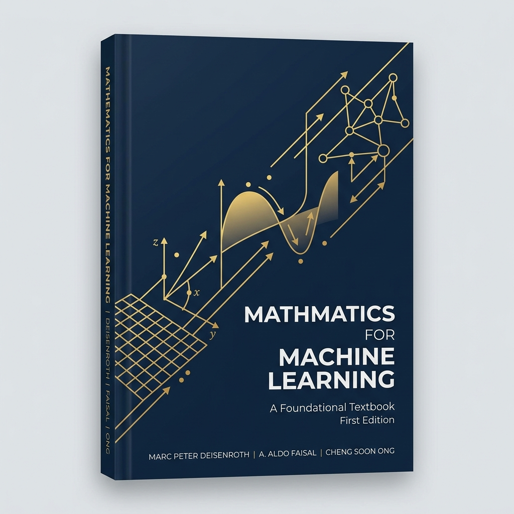
Authors: Marc Peter Deisenroth, A. Aldo Faisal, and Cheng Soon Ong
Publisher: Cambridge University Press, 2020 (ISBN: 9781108455145)
Official Website: mml-book.com
Overview: A highly popular textbook that provides a self-contained introduction to the mathematical tools necessary for machine learning, including linear algebra, analytic geometry, matrix decompositions, vector calculus, optimization, probability, and statistics.
Why Read It?: It connects mathematical concepts directly to machine learning algorithms like linear regression, PCA, mixture models, and SVMs.
4. An Introduction to Statistical Learning (ISL)#
{kind=link}
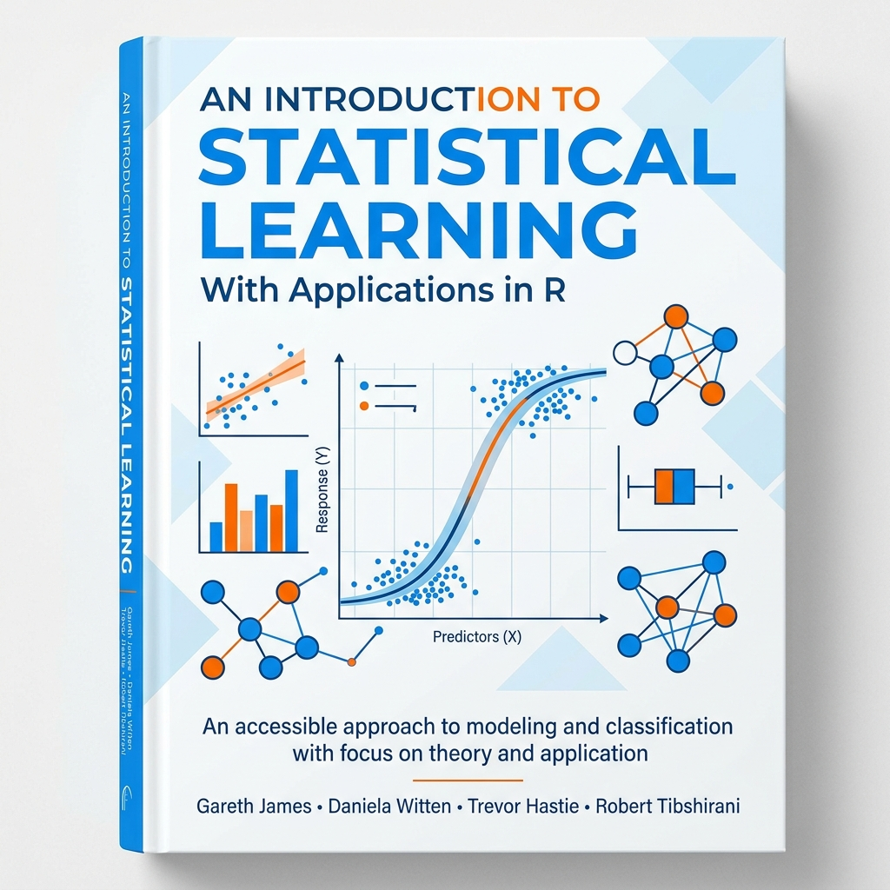
Authors: Gareth James, Daniela Witten, Trevor Hastie, and Robert Tibshirani
Publisher: Springer, 2nd Edition, 2021 (ISBN: 9781071614175)
Official Website: statlearning.com
Overview: This classic textbook (available in both R and Python versions) provides an accessible overview of the field of statistical learning, covering regression, classification, resampling, regularization, tree-based methods, SVMs, and unsupervised learning.
Why Read It?: It is the gold standard for understanding statistical machine learning concepts without getting bogged down in overly advanced math.
5. Deep Learning#

Authors: Ian Goodfellow, Yoshua Bengio, and Aaron Courville
Publisher: MIT Press, 2016 (ISBN: 9780262035613)
Official Website: deeplearningbook.org
Overview: Widely regarded as the definitive textbook on deep learning theory, this book covers the mathematical foundations (linear algebra, probability, numerical computation), classical machine learning concepts, and deep network architectures (feedforward networks, CNNs, RNNs, and optimization).
Why Read It?: It provides a rigorous theoretical foundation for anyone wishing to understand the mathematics behind deep learning architectures.
6. Dive into Deep Learning (D2L)#

Authors: Aston Zhang, Zachary C. Lipton, Mu Li, and Alexander J. Smola
Publisher: Cambridge University Press, 2023 (ISBN: 9781009382656)
Official Website: d2l.ai
Overview: An interactive, code-first textbook that covers deep learning theory alongside fully functional code implementations in PyTorch, TensorFlow, and MXNet.
Why Read It?: Perfect for hands-on learners who want to see mathematical concepts directly translated into executable Python code and Jupyter notebooks.
7. Machine Learning (commonly known as the “Watermelon Book”)#
{kind=link}
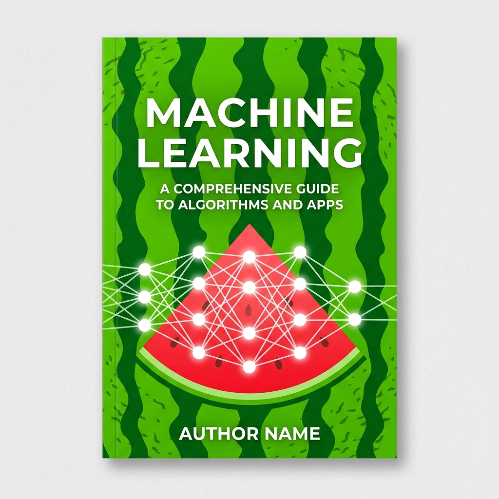
Author: Zhou Zhihua
Publisher: Tsinghua University Press, 2016 (ISBN: 9787302423287)
Official Page: Tsinghua University Press Book Link
Overview: Written by Nanjing University Professor Zhou Zhihua, this highly popular 425-page textbook provides a comprehensive introduction to machine learning. It won the first prize of the inaugural National Excellent Teaching Materials Award (Higher Education Category), has been adopted by over 500 academic institutions, and has seen dozens of print runs.
Why Read It?: It is an incredibly well-structured, clear, and comprehensive text covering classical machine learning, ensemble methods, clustering, neural networks, and evaluation metrics.
8. Machine Learning with PyTorch and Scikit-Learn#
{kind=link}
Authors: Sebastian Raschka, Yuxi (Hayden) Liu, and Vahid Mirjalili
Publisher: Packt Publishing, 2022 (ISBN: 9781801819312)
GitHub Repository: Code and Notebooks
Overview: A comprehensive guide to building machine learning and deep learning models using PyTorch and Scikit-Learn. It bridges theory with practical coding, covering classification, regression, model evaluation, CNNs, RNNs, and transformers.
Why Read It?: Ideal for engineers seeking to transition from traditional statistical learning to deep neural networks using PyTorch.
9. Hands-on Machine Learning with Scikit-Learn, Keras, and TensorFlow (3rd Edition)#

Author: Aurélien Géron
Publisher: O’Reilly Media, 2022 (ISBN: 978109825608)
GitHub Repository: Code and Notebooks
Overview: A practical, project-based guide to building machine learning systems. It starts with Scikit-Learn to cover classical models, then moves into Keras and TensorFlow to build, train, and deploy deep neural architectures.
Why Read It?: Famously clear, accessible, and packed with practical tips on hyperparameter tuning, data preprocessing, and model deployment.
10. Generative Deep Learning (2nd Edition)#
{kind=link}
Author: David Foster
Publisher: O’Reilly Media, 2023 (ISBN: 9781098134181)
GitHub Repository: Code and Notebooks
Overview: A complete guide to modern generative models. It teaches you how to design and build Variational Autoencoders (VAEs), Generative Adversarial Networks (GANs), Transformers (GPT-3), Diffusion Models, and deep reinforcement learning agents.
Why Read It?: Essential for understanding how AI systems create text, images, and music, with intuitive step-by-step PyTorch code.
11. Deep Reinforcement Learning Hands-on (2nd Edition)#
{kind=link}
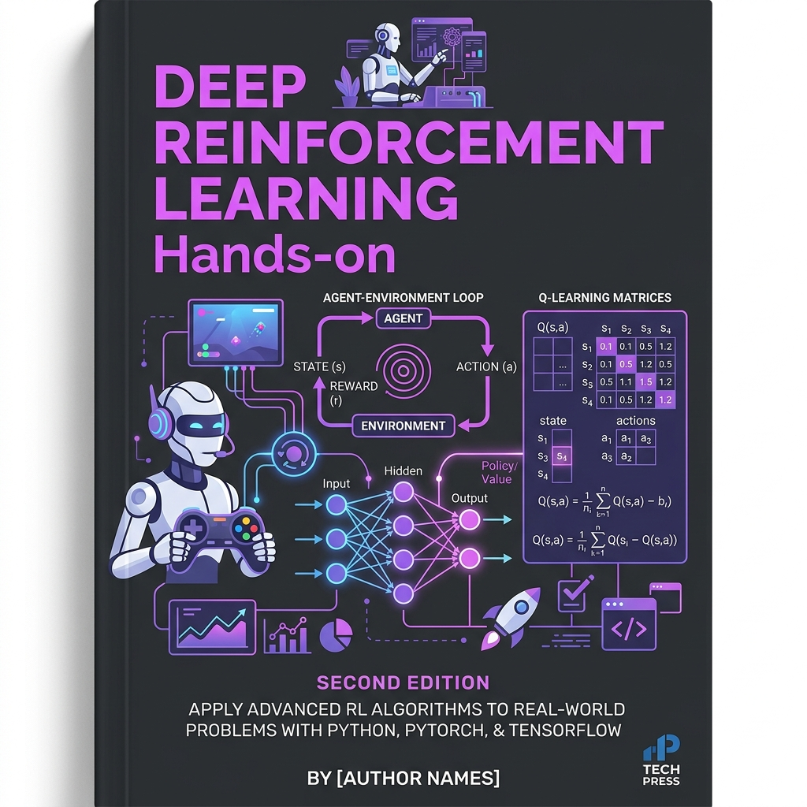
Author: Maxim Lapan
Publisher: Packt Publishing, 2020 (ISBN: 9781838985103)
GitHub Repository: Code and Notebooks
Overview: A comprehensive, practical guide to deep reinforcement learning (DRL) algorithms. It covers Q-learning, deep Q-networks (DQNs), policy gradients, actor-critic methods, and applying DRL to robotics, gaming agents, and trading.
Why Read It?: The go-to reference for practical implementations of complex RL algorithms in PyTorch.
12. Build a Large Language Model (From Scratch)#
{kind=link}
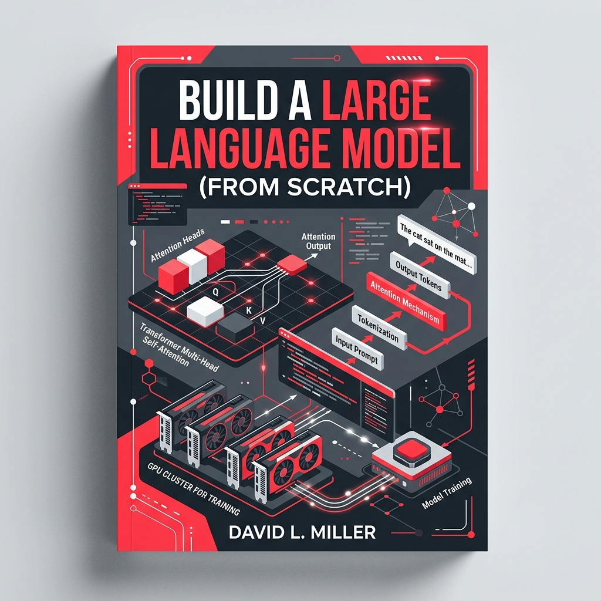
Author: Sebastian Raschka
Publisher: Manning Publications, 2024 (ISBN: 9781633437166)
GitHub Repository: Code and Notebooks
Overview: A brilliant, step-by-step guide to coding and training a Generative Pre-trained Transformer (GPT) style LLM from scratch in PyTorch. It explains tokenization, self-attention mechanisms, transformer architecture, pre-training, and instruction fine-tuning.
Why Read It?: It demystifies the black box of LLMs, showing that you can write the entire architecture in standard PyTorch code.
13. Computer Vision: Algorithms and Applications (2nd Edition)#
{kind=link}
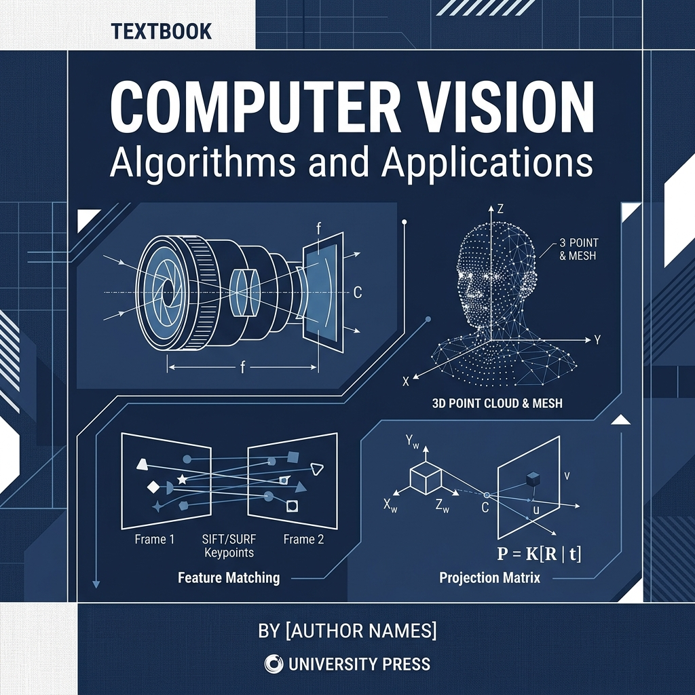
Author: Richard Szeliski
Publisher: Springer, 2022 (ISBN: 9783030349363)
Official Website: szeliski.org/Book
Overview: The definitive reference for computer vision algorithms. It covers image formation, processing, feature detection, camera geometry, 3D reconstruction, and modern deep learning-based vision systems.
Why Read It?: An essential read for understanding spatial geometry, coordinate transforms, and modern visual perception algorithms in robotics and image processing.
Download PDF Version#
You can download the complete Math for Data Science book as a single offline PDF file.
📥 Download Link#
Click the link below to download the complete book:
📖 PDF Features#
Single-page layout containing all chapters of this blog.
Ready for offline reading and printing.
Standard A4 format with margins optimized for tablet or paper reading.